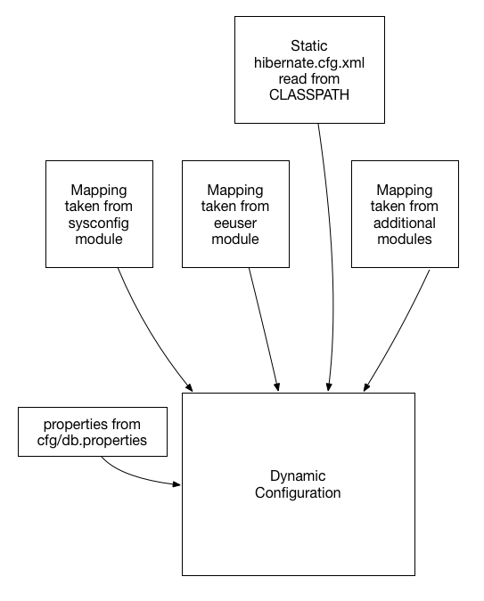
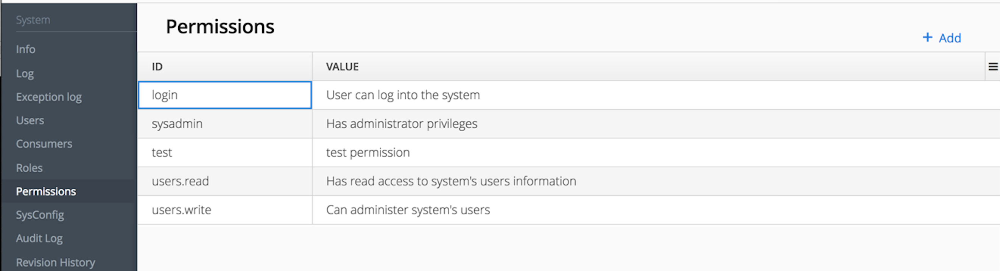

jPOS-EE 2.2.7-SNAPSHOT
Copyright © 2000-2015 Alejandro P. Revilla d/b/a jPOS.org
All rights reserved. No part of this document may be reproduced in any form or by any electronic or mechanical means, including information storage and retrieval systems, without permission in writing from Alejandro P. Revilla, company number\# 212 752 380 016, Uruguay, except by a reviewer who may quote brief passages in a review.
2015
| Revision History | ||
|---|---|---|
| Revision 2.2.9-SNAPSHOT | 2022-09-10 | jSS |
Table of Contents
- I. Introduction
- II. Modules
- III. jPOS-EE Entities
- IV. Appendices
Back in the late nineties, our company was awarded the development of a jPOS-based application for our local VISANet [1] acquirer.
At that time, we thought that going for a J2EE solution was the way to go. We went with the great Orion application server and we called the application jPOS-EE, it was kind of a jPOS "Enterprise" Edition.
But we soon got to hit some of the major problems of running an early J2EE application in a demanding 7x24x365 environment, the deployment of new versions was both stressful and costly in terms of time (a one minute downtime can feel like a week when you are manning the telephones in a call center). So we designed a lightweight solution that we could deploy and redeploy quickly, without obscure RMI-IIOP related issues that could only be solved with an application server restart.
In addition, we started to see how O/R mapping tools such as Hibernate offered greater sophistication than EJB 2.1 could offer, and EJB 3.0 was not on the horizon yet.
So we decided to build our own tiny environment and began by building Q2, our JMX-based IoC micro kernel. [2]
We consider jPOS-EE as a Meta-Project where we encompass many other compatible (from a technical as well as license perspective) Open Source projects such as:
- Hibernate
- Jetty
- Velocity
- XStream
- JDOM
- JDBM
- Apache Commons
- Etcetera
In order to easily assemble different types of jPOS-EE applications whilst fostering code reuse as much as possible, we have developed a very simple, module-based jPOS-EE Software Development Kit (jPOS-EE SDK), now replaced by Gradle [3].
We kept the name jPOS-EE, but we replaced the first E from Enterprise to Extended. This document describes the jPOS Extended Edition.
We don’t claim that using the jPOS-EE framework and our choice of supporting projects is the best way to write a jPOS application, people could argue that JEE is the way to go, or Spring is the way to go, or Pico/Nano container does better IoC, or that we should use JBoss/Jeronimo, Guice, OSGI, QI4J, you name it. In the same way, we choose to use Jetty but there’s people that may say that Tomcat is the way to go.
jPOS-EE is just the way we at jPOS.org write our applications and we are sharing this "technology" on an as-is basis. You can use it, or you can write your jPOS application using whatever technology/framework you feel more comfortable with.
This is the official jPOS-EE documentation that intends to aggregate everything related to jPOS-EE, including but not limited to: its objectives, specifications, schedule, priorities, organizational chart, road map, change log, coding conventions, core modules, optional modules, license information, etc.
It complements, but doesn’t replace the jPOS Programmer’s Guide. It is not a user guide nor a tutorial, it is a development master workbook, written by developers for developers.
You’re currently reading revision 2.2.9-SNAPSHOT.
New versions of this document are regularly posted in jpos.org/doc/jPOS-EE.pdf.
Our main objective is to avoid repeating ourselves. DRY [4] is a good paradigm to keep in mind.
We at jPOS.org have a small company with very limited development resources and a large number of customers. Most of our end user applications are very specific, yet they share a large number of features.
jPOS-EE is all about code reuse. We developed a very simple SDK based on a pluggable module architecture that can be bundled together at compile time to create — as fast as possible — highly reliable jPOS applications.
The more we use jPOS-EE to create applications for our customers, the more we tend to make these modules smaller, with as few dependencies on each other as possible.
We expect developers using jPOS-EE to create their own modules based upon our public ones, and to interact with the jPOS-EE community in order to engage into the formal process of requesting changes to the jPOS-EE codebase whenever it is deemed necessary.
| Tip | |
|---|---|
Local changes to the jPOS-EE code base may seem the easy way to solve a given requirement, but it forces you to apply the same change over and over as new jPOS-EE versions become available. We encourage you to go the formal route and send us a pull request that can be included in jPOS-EE, reviewed by other jPOS-EE developers, tested in multiple platforms and disparate environments, properly documented and maintained in future releases. |
jPOS-EE is copyrighted code licensed under the GNU Affero General Public License version 3.
A copy of the copyright notice is available in every source file and can be found in link Appendix A, Copyright.
A copy of the GNU Affero General Public License version 3 is also available in Appendix B, License.
We strongly recommend you to review our license terms before using jPOS or jPOS-EE. You can find very useful information in the official Free Software Foundation GPL FAQ page (www.fsf.org/licensing/licenses/gpl-faq.html).
The AGPL covers applications that runs over the network (SaaS) such as most credit/debit card verification/authorization systems like those deployed by most people using jPOS, meaning that you probably need a commercial license.
If in doubt, you can contact us using jpos.org/contact
jPOS-EE is a centralized open source project. jPOS.org retain full control of the release cycle because the code placed in the jposee repository is regularly checked out by our production customers.
Whilst we have experimental modules, and a sandbox/incoming area where we can put alpha and even PoC code, there are fundamental modules that we use over and over at production sites. These modules may have been audited or even certified by third parties and we can’t afford to modify them without being absolutely sure of their impact in the rest of the systems.
That said, we are very happy to accept contributions, and publish them for review by the jPOS-EE community.
We license jPOS-EE commercially, so companies or individuals willing to include code in the jPOS-EE distribution will need to sign a CLA (see Appendix C, Contributor License Agreement) and if working for a company, a CCLA agreement (see Appendix D, Corporate CLA) as well.
The best way to stay up-to-date with jPOS and jPOS-EE is to monitor the following resources:
- The jPOS Blog
- jPOS and jPOS-EE commit notifications
- jPOS users forum
- jPOS developers forum
- @jposcommits
- Issue Tracker
- If tweeting about jPOS, please use the #jPOS hashtag
| Resources Page | |
|---|---|
There is a handy jpos.org/resources page at our website. |
[1] Visanet/Uruguay http://visanet.com.uy
[2] Q2 is QSP version 2, described in the jPOS Programmer’s Guide
[3] Gradle Project http://gradle.org/
[4] Do not repeat yourself
This project uses Fork & Pull collaborative development model as described in: https://help.github.com/articles/using-pull-requests.
The following sections provide the guidelines to follow before a contribution is made to the project.
If you’re familiar with git and GitHub, here’s the short version of what you need to know. Once you fork and clone the jPOS-EE code:
- Don’t develop on the master branch. Always create a development branch specific to the issue (see https://jpos.org/issues/issues/jPOS-EE) you’re working on. Name it by issue # and description. For example, if you’re working on Issue jPOS-EE-359, an aspect naming fix, your development branch should be called jPOS-EE-359-aspect-names. If you decide to work on another issue mid-stream, create a new branch for that issue—don’t work on both in one branch.
- Do not merge the upstream master with your development branch; rebase your branch on top of the upstream master.
- A single development branch should represent changes related to a single issue. If you decide to work on another issue, create another branch.
- Fork on GitHub (click Fork button)
- Clone to computer (
$ git clone git@github.com:~you~/jPOS-EE.git) - Don’t forget to cd into your repo: (
$ cd jPOS-EE/) - Set up remote upstream (
$ git remote add upstream git://github.com/jpos/jPOS-EE.git) - Create a branch for new issue (
$ git checkout -b 100-new-feature, if you don’t have a bug report no worries just skip the number) - Develop on issue branch. [Time passes, the main jPOS repository accumulates new commits]
- Commit changes to issue branch. (
$ git add . ; git commit) - Fetch upstream (
$ git fetch upstream) - Update local master (
$ git checkout master; git pull upstream master) - Repeat steps 5-8 till dev is complete
- Rebase issue branch (
$ git checkout 100-new-feature; git rebase master) - Push branch to GitHub (
$ git push origin 100-new-feature) - Issue pull request (Click Pull Request button)
Extra reading material on forking can be found at : http://gun.io/blog/how-to-github-fork-branch-and-pull-request/
| Note | |
|---|---|
Item 11 (rebase) in the previous list is very often forgotten, but it’s extremely important. Be kind with the rest of the team and do it. Read this post by Git author Linus Torvalds to understand why. |
Please read http://tbaggery.com/2008/04/19/a-note-about-git-commit-messages.html for guidelines in creating good commit messages.
We adhere to standard Sun’s java ® coding conventions for the Java Language, that among other things it specifies: Four spaces should be used as the unit of indentation. The exact construction of the indentation (spaces vs. tabs) is unspecified. Tabs must be set exactly every 8 spaces (not 4).
Due to our revision control system, we also need that hard tabs (ASCII 0x09) are not used in source code and configuration files (in order for diff to work properly among platforms).
For vi users, we are using the following .vimrc:
set ts=8
set sts=4
set sw=4
set expandtabFor your Git commits and pull requests, we recommend you normalize your end of lines. This is specially important if you use a Windows platform.
git config --global core.autocrlf input
| Tip | |
|---|---|
Eclipse users, go to Preferences -> Java -> Editor -> Typing and check the Insert space for tabs checkbox. |
jPOS-EE-SDK assumes that the following software is installed in your development environment:
- JDK 1.8 or higher
- A git client
While jPOS and jPOS-EE can be used in a Windows environment, we develop it in an Unix environment, so you’ll find many useful Unix scripts with no Windows counterpart. If you use windows, you may choose to install a Unix-like environment such as Cygwin so you can make use of the unix scripts directly.
jPOS-EE is known to work with most modern IDEs such as Eclipse,
NetBeans, Jetbrain’s IDEA®. The Gradle configuration uses the
IDEA and Eclipse plugins allowing you to create suitable IDE
configurations by running gradle idea or gradle eclipse.
jPOS-EE is a stand-alone application that runs off jPOS' Q2 container.
We are aware that there are companies and institutions that standardize on using a given application server or JEE container. That’s great, but jPOS-EE is a stand-alone application. If you master your application server, you will certainly be able to integrate jPOS-EE, either as a client EJB application, as a Resource Adapter, a WAR, EAR, etc. In addition, some application servers have proprietary extensions that facilitates such integration.
But let us repeat this one more time. jPOS-EE is a stand alone application. If you know how to run it inside application server XYZ, that’s perfect; if we can make your life easier by doing something on our end that makes that integration easier, and you have the expertise in both jPOS-EE and your application server to provide us detailed instructions on what you need, and the changes won’t break any existing jPOS or jPOS-EE functionality, then we are willing to do so, but if you decide to go that route, you’ll be on your own.
In this chapter we will work through setting up the development environment consisting of:
- Downloading the jPOS-EE SDK source code using Git.
- Compiling and installing the components locally on your system.
jPOS-EE modules are regularly published to jPOS' maven repository. You can use its dependencies by adding
<repository>
<id>jpos-ee</id>
<name>jPOS Maven Repository</name>
<url>http://jpos.org/maven</url>
</repository>to your Maven or
repositories {
...
maven { url 'http://jpos.org/maven' }
...
}to your Gradle configuration.
| Tip | |
|---|---|
We recommend you use the jPOS Template,
in particular its |
In order to get a copy of it, and keep your copy up-to-date with the latest revision, you need to use a Git client.
Git installation instructions for Windows, Linux and MacOS X are available here: Git Setup.
jPOS-EE is hosted at GitHub. By visiting the project page you will be provided information on how to Checkout, Browse and see a history of changes to the system.
If you are on an Unix/Unix-like environment, an initial checkout would look something like :-
$ git clone https://github.com/jpos/jPOS-EE.git Cloning into 'jPOS-EE'... remote: Counting objects: 627, done. remote: Compressing objects: 100% (355/355), done. remote: Total 627 (delta 250), reused 528 (delta 151) Receiving objects: 100% (627/627), 127.72 KiB, done. Resolving deltas: 100% (250/250), done. $
This will create a new directory “jPOS-EE” containing a clone of what’s currently in the master branch at our central GitHub repository.
If you’re not using jPOS Maven repo, you can install your dependencies locally by calling:
gradle install
If your build completes with “BUILD SUCCESSFUL” , you are ready to proceed to create your first project!
| Note | |
|---|---|
Gradle just built and installed all of its components into your local Maven repository, where they can be accessed by any of your projects. If you have made local changes to the jPOS-EE sources, followed by a call
to Please note that while this is OK during development, it’s a bad practice if you expect to produce repeatable builds. |
Once you have jPOS-EE installed, in order to create your own project, you can take advantage of our companion “jPOS Template”.
Download the latest copy of the jPOS Template
in zip (https://github.com/jpos/jPOS-template/archive/master.zip)
or tar.gz format (https://github.com/jpos/jPOS-template/archive/master.tar.gz).
Move the directory jPOS-template-master into your desired project name, i.e.: “myjposproject”.
For an initial sanity test, let’s build a simple jPOS application first before moving to jPOS-EE.
Call gradle installApp (or gradlew installApp if you don’t have Gradle installed)
Then go to the directory build/install/myjposproject/bin and you will find a script called q2
(along with a Windows version q2.bat). Running it should start jPOS, that you can stop using Ctrl-C.
Here is a full transcript of this session:
$ cd /tmp $ wget https://github.com/jpos/jPOS-template/archive/master.tar.gz ... ... Saving to: `master.tar.gz' $ tar zxvf master.tar.gz x jPOS-template-master/ x jPOS-template-master/.gitignore x jPOS-template-master/COPYRIGHT x jPOS-template-master/LICENSE x jPOS-template-master/README.md x jPOS-template-master/build.gradle x jPOS-template-master/gradle/ ... ... ... $ mv jPOS-template-master myjposproject $ cd myjposproject $ ./gradlew installApp :compileJava UP-TO-DATE :processResources UP-TO-DATE :classes UP-TO-DATE :jar :installApp BUILD SUCCESSFUL $ build/install/myjposproject/bin/q2 ... ... <log realm="Q2.system" at="Fri Jan 25 18:30:37 UYST 2013.335"> <info> deploy:/private/tmp/myjposproject/build/install/myjposproject/deploy/99_sysmon.xml </info> </log> ... ...
The jPOS template creates a standard jPOS application with its
lib, deploy, cfg and log directories that you can review in the
build/install/myjposproject directory.
Now lets add a jPOS-EE module. We’ll start with a simple one, the Server Simulator.
Edit build.gradle and add the following dependency:
compile group:'org.jpos.ee', name:'jposee-server-simulator', version:'2.0.2-SNAPSHOT'
so that the dependencies would look like this:
dependencies {
compile group:'org.jpos', name:'jpos', version:'1.9.2'
compile group:'org.jpos.ee',
name:'jposee-server-simulator',
version:'2.0.2-SNAPSHOT'
testCompile group:'junit', name:'junit', version:'4.8.2'
}If you build again the system by calling gradle installApp and you
review the generated lib directory now in build/install/myjposproject/lib
you’ll see two new libraries:
jposee-core-2.0.2-SNAPSHOT.jarandjposee-server-simulator-2.0.2-SNAPSHOT.jar
Now a little hack: jPOS-EE modules contain sample configuration files inside their distributed jars. Those are intended as a reference and need to be reviewed by the developer, but they provide a good starting point.
If you try the command:
jar tvf build/install/myjposproject/lib/jposee-server-simulator-2.0.2-SNAPSHOT.jar
You’ll see content like this:
META-INF/ META-INF/MANIFEST.MF META-INF/org/ META-INF/org/jpos/ META-INF/org/jpos/ee/ META-INF/org/jpos/ee/installs/ META-INF/org/jpos/ee/installs/cfg/ META-INF/org/jpos/ee/installs/cfg/serversimulator.bshMETA-INF/org/jpos/ee/installs/deploy/ META-INF/org/jpos/ee/installs/deploy/05_serversimulator.xml
| Server Simulator configuration script |
| Server Simulator QBean descriptor |
If you try gradle tasks you’ll see that there’s a task called “installResources”
which is defined in jpos-app.gradle like this:
task installResources(dependsOn: 'classes', type: JavaExec) {
classpath = sourceSets.main.runtimeClasspath
main = 'org.jpos.q2.install.Install'
args = ["--outputDir=src/dist"]
}This basically pulls all the sample configuration files from jPOS-EE modules
and place them into the src/dist directory of your application, where you can
edit them, add them to your SCM, etc.
So if we call gradle installResources in the previous example, we would endup
with a couple of new files in src/dist:
src/dist/cfg/serversimulator.bshsrc/dist/deploy/05_serversimulator.xml
Those files will land in the build/install/myjposproject on your next call to gradle installApp
or inside your distribution in build/distributions the next time you call gradle dist.
| Tip | |
|---|---|
At this point, you should be able to run <isomsg> <field id="0" value="0800" /> <field id="3" value="000000" /> <field id="11" value="000001" /> <field id="41" value="00000001" /> <field id="70" value="901" /> </isomsg> If everything works alright, you should get a 0810 response. |
| Tip | |
|---|---|
You may want to visit the jPOS Tutorials page for additional tutorials. |
In our traditional Ant based build system, the developer chooses which modules to use from the opt directory, and creates symbolic links to the modules directory. The build system merges them into a flat structure, and does some processing such as:
- Concatenate constants files from all modules into single addressable constant files.
- Create the hibernate configuration file from all the "mapping file" snippets from all the selected modules
- Resolve any property placeholders from all modules using property files
Compiled classes for all selected modules, static definitions for database connections, static constants file(s), etc. are then used to generate a jar archive (jposee.jar).
With the introduction of Gradle-based jPOS-EE project structure, we are also introducing a new module system, based on Maven type artifacts.
Some immediate benefits are:
- The SDK is built independently from your project.
- Your project just uses the modules as versioned dependencies. As a result your project’s footprint is reduced, as now only need to track your code, not all the jPOS-EE dependencies in your version control system.
- The barrier to entry is greatly reduced, since a new developer could setup a jPOS-EE project in five minutes.
- No need to track module dependencies.
- Each module contains "sample" configurations used during project setup at runtime.
A module is nothing more than a simple jar artifact with special features.
A Module defines a "module descriptor", stored in /META-INF/org/jpos/ee/modules. This descriptor contains the hibernate mapping entries for the persistent entities defined in this module.
Here is an example,
<module name="status"> <mappings> <mapping resource="org/jpos/ee/status/Status.hbm.xml" /> <mapping resource="org/jpos/ee/status/StatusTag.hbm.xml" /> </mappings> </module>
It is best practice to name the module descriptor the same as the module name suffixed with the ".xml" extension.
Instead of defining them statically in a central hibernate.cfg.xml, the persistent class mappings are resolved at runtime from all the module descriptors visible in the classpath.
There’s a very special resource path, /META-INF/org/jpos/ee/installs. Any resource stored below that path, gets installed to the filesystem during the setup process (as shown in the tutorial).
So for example, if we have the jposee-core module as one of our dependencies, and the core modules has the following structure
META-INF
`-- org
`-- jpos
`-- ee
`-- installs
|-- cfg
| `-- README.txt
|-- deploy
| |-- 00_logger.xml
| `-- 99_sysmon.xml
`-- log
`-- q2.logand we do:
$ java -jar q2.jar -cli q2> setup .
We’d get the following structure copied to our current working directory:
.
|-- cfg
| `-- README.txt
|-- deploy
| |-- 00_logger.xml
| `-- 99_sysmon.xml
`-- log
`-- q2.logIf now we added the jposee-db-mysql module as one of our dependencies, which contains the following structure and ran setup again:
META-INF
`-- org
`-- jpos
`-- ee
`-- installs
`-- cfg
`-- db.propertiesWe’d end up with the following files in our filesystem:
.
|-- cfg
| |-- README.txt
| `-- db.properties
|-- deploy
| |-- 00_logger.xml
| `-- 99_sysmon.xml
`-- log
`-- q2.logWhat | The core module contains all basic jPOS-EE functionality. |
When | Available in all versions of jPOS-EE. |
Who | The jPOS.org team. |
Where | Directory modules/core available in git repository at github. |
Why | This is a core module required in all jPOS-EE applications. |
Status | Stable. |
License |
Maven Coordinates.
<dependency> <groupId>org.jpos.ee</groupId> <artifactId>jposee-core</artifactId> <version>${jposee.version}</version> </dependency>
The core module serves two purposes:
- It includes all basic dependencies needed to run any jPOS-EE application.
- It contains base functionality shared by all jPOS-EE applications.
What | The txn module contains Transaction Manager support code as well as common transaction manager participants. |
When | Available in all versions of jPOS-EE. |
Who | The jPOS.org team. |
Where | Directory modules/txn available in git repository at github. |
Why | This module is useful if your jPOS-EE application uses the Transaction Manager. |
Status | Stable. |
License |
Maven Coordinates.
<dependency> <groupId>org.jpos.ee</groupId> <artifactId>jposee-txn</artifactId> <version>${jposee.version}</version> </dependency>
There is nothing worse than re-inventing the wheel for every project. With this in mind, the jPOS team identified a series of activities that were common to almost every enterprise grade jPOS-EE based project, and created a module to provide the basis for building great TransactionManager participants that follow best practice patterns.
Instead of showing a boring table with a description of what every component does, I think an example Transaction Manager instance is in order:
<txnmgr name="txnmgr" logger="Q2" class="org.jpos.transaction.TransactionManager"> <property name="space" value="transient:default"/> <property name="queue" value="TXN"/> <property name="max-sessions" value="10"/> <participant class="org.jpos.transaction.Open" logger="Q2" realm="open-db">logger="Q2" realm="demo-participant"/> <participant class="org.jpos.transaction.Close" logger="Q2" realm="close-db">
<property name="checkpoint" value="close"/> </participant> </txnmgr>
| The Open Participant opens a new DB session and transaction. |
| Our demo participant does some processing |
| The Close Participant commits or rollbacks the existing transaction based on overall outcome, and closes the session. |
In our demo scenario, the transaction manager will open a database session, execute our DemoParticipant and close the database session (although our DemoParticipant does not need a DB session!).
In case we wanted to add some debugging, we could definitely add to the end of the file:
<participant class="org.jpos.transaction.ProtectDebugInfo" logger="Q2" realm="protect-debug">
| The ProtectDebugInfo Participant protects sensitive material from logs. |
| The Debug participant dumps the contents of the context to the log. |
| Note | |
|---|---|
As of jPOS 2.1.1 and beyond, the TransactionManager automatically logs the Context, as
well as profiling information, whenever the |
This would result in the contents of the context being dumped to the log, protecting sensitive material on the way.
In case you are wondering what the DemoParticipant might look like:
public class DemoParticipant extends TxnSupport implements MyConstants"The message needs to have an amount (ISOMsg:4)"); message.setResponseMTI(); Random random = new Random(System.currentTimeMillis()); message.set (37, Integer.toString(Math.abs(random.nextInt()) % 1000000)); message.set (38, Integer.toString(Math.abs(random.nextInt()) % 1000000)); if ("000000009999".equals (message.getString (4))) message.set (39, "01"); else message.set (39, "00"); source.send (message); return PREPARED | NO_JOIN | READONLY; } public void commit(long id, Serializable context) { } public void abort(long id, Serializable context) { } }
| Our demo participant extends TxnSupport, the supporting class provided by this module. |
| TxnSupport overrides the "prepare" method and delegates to doPrepare |
| As you can see, not-null assertions are quite easy! |
| So are boolean assertions. |
| Note | |
|---|---|
If you are serious about jPOS-EE development involving Transaction Manager, we advise
you to study the |
The txn module has a handy TxnId class that can be used to generate ids in a distributed way.
The id is composed of:
- 1-digit century
- 2-digits year
- 3-digits day of year
- 5-digits second of day
- 3-digits node id
- 5-digits transaction id
A typical ID long value would look like this: 173000348000000001,
and the toString() method would show as 017-300-03480-000-00001.
TxnId also has a handy toRrn() method that can be used to create
(and parse) 12-characters strings suitable to be used as retrieval
reference numbers.
TxnId can be used instead of UUIDs. It puts less pressure in the database
index and provides chronological order.
| Warning | |
|---|---|
The last two groups, |
The main configuration is done on 00_qi.xml
The main contents of this file are:
Indicates the available locales for the app, it can have more than one. The first one will be the default locale.
Examples:
<locale>en-US</locale>
<locale>es-UY</locale>
Indicates the names of the .properties files available. It can contain more than one.
Example:
<messages>qi-core-messages</messages>
<messages>qi-eeuser-messages</messages>
<messages>qi-sysconfig-messages</messages>
The naming convention for these files is: packagename_locale.properties
A menubar represents the horizontal menu at the top of the app.
It is represented with the <menubar> element.
It contains "menus".
Represents the sidebar, it can contain sections and options.
It is represented with the sidebar element.
It can also be identified by an id. Example: <sidebar id="info"> ... </sidebar>
Represents a section of the sidebar, represented with the <section> element. It has the following properties:
name: String, required.
Example: <section name="System"/>
Represents an option on the sidebar, represented with the <option> element. It has the following properties:
name(string, required). The name that will be shown on the sidebar.action(string, required). What will be executed on click.perm(string, optional). The permission required to execute the action.
Example:
<option name="Exception log" action="exceptions"/>
Represents a view, it has the following properties:
route(string, required). Therouteof the view to show.classperm(* means any perm).sidebaroptional sidebar id. Indicates to which sidebar the view corresponds.
Example:
<view route="home" class="org.jpos.qi.views.DefaultView" perm="*" sidebar = "system"/>
Views can can/will contain different properties & attributes.
Represented with the <property> element. It has a name and a value.
Some views require:
entityName(string, required for entities). The name of the entity. For example, forusers, it isuser. It must be included like this:<property name="entityName" value="aName"/>name(string, required when extending a class). The name for the view. When extending a class (Ex: when extending from SysConfig), it is a required field. It must be included like this:<property name="name" value="aName"/>
Represented with the <attribute> element.
It has:
name(string, required) The name of the attribute, it will be shown on the column, or field.field(boolean, optional) Boolean value indicating whether the attribute should be shown as a field, on the specific view.column(boolean, optional) Boolean value indicating whether the attribute should be shown as a columnn on the general view.read-only(boolean, optional) Boolean value indicating if the attribute should be editablerequired(boolean, optional) Indicates if the field is required. Default is false.regex(string, optional) A string indicating the regex used for validating the field.length(numeric,optional) A number, indicating the max length for the field value.expand-ratio(numeric,optional) A number, indicating if the field’s expandRatio to be used. (Check link:https://vaadin.com/docs/-/part/framework/layout/layout-settings.html#layout.settings.size.expanding(Vaadin docs)[Vaadin Docs] for more info).perm(string, optional) The permission needed to access the field.link(string, optional) The URL for which the link will be generated.position(string, optional) left/center/right/bottom: Indicates if field is displayed on the left, center, right or bottom of form layout.
Example:
Several jPOS-EE components rely on the dbsupport module to configure and access
the underlying database (or databases) using Hibernate.
One of the most used class is org.jpos.ee.DB and its usage is straightforward:
DB db = new DB();
db.open();
...
...
db.close();If you want to update the database, your code may look like this:
DB db = new DB();
db.open();
db.beginTransaction();
...
...
db.commit();
db.close();The DB object implements the Closeable interface, so you can use the try-with-resources construct like this:
try (DB db = new DB()) { db.open(); db.beginTransaction(); ... ... db.commit(); }
| No need to call |
Also, the DB object provides a couple of functional alternatives to the code above:
DB.exec ((db) -> {
return db.session().get(YourObject.class, yourId);
});or execWithTransaction that encloses your function within a beginTransaction/commit block.
DB.execWithTransaction((db) -> {
db.session().save(obj);
return obj;
});| Note | |
|---|---|
Very often we find ourselves answering the question WHY (on earth) we have this
Once we moved away from the object-oriented database to Hibernate, we found it useful to keep that DB object around used by our code, slightly isolating us from Hibernate and providing some helper functionality, and that’s the only reason there’s a DB object in jPOS-EE. |
Hibernate applications are usually configured by means of a single hibernate.cfg.xml file
that looks like this:
<!DOCTYPE hibernate-configuration PUBLIC
"-//Hibernate/Hibernate Configuration DTD 3.0//EN"
"http://www.hibernate.org/dtd/hibernate-configuration-3.0.dtd">
<hibernate-configuration>
<session-factory>
...
...
<mapping class="org.jpos.ee.SysConfig"/>
<mapping resource="org/jpos/ee/User.hbm.xml" />
<mapping resource="org/jpos/ee/Consumer.hbm.xml" />
<mapping resource="org/jpos/ee/Revision.hbm.xml" />
<mapping resource="org/jpos/ee/Role.hbm.xml" />
<mapping class="com.your.company.entity.YourEntity" />
...
...
</session-factory>
</hibernate-configuration>Besides standard configuration (c3p0, jdbc, transaction isolation), the hibernate.cfg.xml file has
a collection of mappings for your application’s entities, but jPOS-EE applications are built à la carte
picking modules from the jPOS-EE modules offering, as well as customer specific modules.
So if an application wants to use jPOS-EE DB support using say Postgresql backend, and wants to use the
sysconfig module, and eeuser module, you would add the following dependencies:
compile "org.jpos.ee:jposee-db-postgresql:${jposeeVersion}"
compile "org.jpos.ee:jposee-sysconfig:${jposeeVersion}"
compile "org.jpos.ee:jposee-eeuser:${jposeeVersion}"
| the |
But upon adding these modules as a dependency, the developer would have to manually add
these mappings to the hibernate.cfg.xml.
In addition, as part of the edit work, you need to specify the Hibernate dialect to be used
(i.e. org.hibernate.dialect.MySQL5InnoDBDialect for MySQL, or PostgreSQLDialect for Posgresql),
JDBC URL, etc.
jPOS-EE uses a simple convention to dynamically create the Hibernate configuration file based on the following rules:
- It uses an initial hibernate.cfg.xml template available in the application’s CLASSPATH as starting point.
- It scans the classpath looking for XML configuration files in each dependency jar inside the
META-INF/org/jpos/ee/modules, for example, theeeusermodule has the file:
<module name="eeuser"> <mappings> <mapping resource="org/jpos/ee/User.hbm.xml" /> <mapping resource="org/jpos/ee/Consumer.hbm.xml" /> <mapping resource="org/jpos/ee/Revision.hbm.xml" /> <mapping resource="org/jpos/ee/Role.hbm.xml" /> </mappings> </module>
So those mappings become part of the main Hibernate configuration. See eeuser.xml
- Finally, it searchs for a
cfg/db.propertiesfile in the current working directory for additional configuration and overrides.
Here is a sample db.properties:
hibernate.connection.username=sa hibernate.connection.password=password hibernate.hbm2ddl.auto=validate hibernate.connection.url=jdbc:postgresql://localhost:5432/jposee hibernate.connection.driver_class=org.postgresql.Driver hibernate.dialect=org.hibernate.dialect.PostgreSQLDialect
| Tip | |
|---|---|
In addition to the XML module mapping file available in each module’s classpath, the |
So to recap, the following diagram shows how a dynamic hibernate.cfg.xml configuration is created when
we call DB db = new DB() with no arguments:

remember, the mapping files are taken from the special META-INF/org/jpos/ee/modules/*.xml.
| Tip | |
|---|---|
This configuration is suitable for situations where you have to connect to a single JDBC endpoint and access and map a unique set of entities. If that’s not your case, read below for additional options. |
If you want to access an alternate database, you can use a modifier when instantiating your DB object, for example:
DB db = new DB ("slave");
| We call this constructor parameter a config modifier |
| If this is a real |
In this case, jPOS-EE will operate in a very similar way as the one described in the previous section,
but instead of reading properties from the cfg/db.properties file, it would read them from
cfg/slave:db.properties.
The previous example works for situations where the set of entities mapped to
tables in your secondary database are the same as the primary database. If that’s not the case,
in addition to read an alternate JDBC configuration from your slave:db.properties you want to map
a different set of entities.
If your config modifier has actually two modifiers, separated by a colon (e.g. slave:legacy),
then we’d read JDBC and optional properties from the cfg/slave:db.properties, but when we scan
for mapping files, we use the following pattern META-INF/org/jpos/ee/modules/legacy:*.xml.
Finally, if this black magic feels confusing, you can always call
DB db = new DB("path/to/your/hibernate.cfg.xml");
| Note | |
|---|---|
The |
Database support is enabled by adding a database backend dependency module to your project.
For MySQL:
<dependency> <groupId>org.jpos.ee</groupId> <artifactId>jposee-db-mysql</artifactId> <version>${jposee.version}</version> </dependency>
For PostgreSQL:
<dependency> <groupId>org.jpos.ee</groupId> <artifactId>jposee-db-postgresql</artifactId> <version>${jposee.version}</version> </dependency>
For H2 Embedded database:
<dependency> <groupId>org.jpos.ee</groupId> <artifactId>jposee-db-h2</artifactId> <version>${jposee.version}</version> </dependency>
For MS-SQL database:
<dependency> <groupId>org.jpos.ee</groupId> <artifactId>jposee-db-mssql</artifactId> <version>${jposee.version}</version> </dependency>
| Warning | |
|---|---|
Only one of these dependencies should be defined in your project. |
What: | This module configures Hibernate to use MySQL as its back end. |
When: | Available in all versions of jPOS-EE. |
Who: | The jPOS.org team. |
How: | Posted by the jPOS-EE team. |
Where: | Directory modules/db-mysql available in the jPOS-EE GitHub repository. |
Why: | An RDBMS back end is required by Hibernate. |
Status: | Stable. |
License: | The jPOS-EE code related to this module is licensed under the GNU Affero General Public License version 3. Hibernate ® itself is released under the GNU LGPL v2.1 license. See Hibernate’s License FAQ for details and up-to-date information. The MySQL JDBC connector is licensed under the GNU GPL license. See Connector/J page. |
Upon running setup, your runtime directory will contain a file: cfg/db.properties.
hibernate.connection.username=sa
| Replace value with your database username |
| Replace value with your database password |
| Makes hibernate automatically update the contents of the DB to match the entities defined. This is good to keep during development, but should be set to NONE in a production environment. |
| Replace the host and database (jposee) to match your database settings. |
| Note | |
|---|---|
You want to change those defaults. |
What: | This module configures Hibernate to use PostgreSQL as its back end. |
When: | Available starting in jPOS-EE v1r104. |
Who: | The jPOS.org team. |
How: | Posted by the jPOS-EE team. |
Where: | Directory modules/db-postgresql available in the jPOS-EE GitHib repository. |
Why: | An RDBMS back end is required by Hibernate. |
Status: | Stable. |
License: | The jPOS-EE code related to this module is licensed under the GNU Affero General Public License version 3. As of jPOS-EE v1r98, Hibernate ® itself is released under the GNU LGPL v2.1 license. See Hibernate’s License FAQ for details and up-to-date information. The PostgreSQL JDBC connector is licensed under the BSD license. See Postgresql.org. |
Upon running setup, your runtime directory will contain a file: cfg/db.properties.
hibernate.connection.username=sa
| Replace value with your database username |
| Replace value with your database password |
| Makes hibernate automatically update the contents of the DB to match the entities defined. This is good to keep during development, but should be set to NONE in a production environment. |
| Replace the host and database (jposee) to match your database settings. |
| Note | |
|---|---|
You want to change those defaults. |
What: | This module configures Hibernate to use H2 as its back end. |
When: | Available in all versions of jPOS-EE since v2.0.0. |
Who: | The jPOS.org team. |
How: | Posted by the jPOS-EE team. |
Where: | Directory modules/db-h2 available in the jPOS-EE GitHib repository. |
Why: | An RDBMS back end is required by Hibernate. |
Status: | Stable. |
License: | The jPOS-EE code related to this module is licensed under the GNU Affero General Public License version 3. As of jPOS-EE v1r98, Hibernate ® itself is released under the GNU LGPL v2.1 license. See Hibernate’s License FAQ for details and up-to-date information. The H2 JDBC connector is licensed under the EPL license. See h2database.com. |
Upon running setup, your runtime directory will contain a file: cfg/db.properties.
hibernate.connection.username=sa
| Replace value with your database username |
| Replace value with your database password |
| Makes hibernate automatically update the contents of the DB to match the entities defined. This is good to keep during development, but should be set to NONE in a production environment. |
| Replace the host and database (jposee) to match your database settings. |
| Note | |
|---|---|
You want to change those defaults |
What: | This module configures Hibernate to use MS-SQL as its back end. |
When: | Available since v2.2.4 |
Who: | The jPOS.org team. |
How: | Posted by the jPOS-EE team. |
Where: | Directory modules/db-mssql available in the jPOS-EE GitHib repository. |
Why: | An RDBMS back end is required by Hibernate. |
Status: | Stable. |
License: | The jPOS-EE code related to this module is licensed under the GNU Affero General Public License version 3. As of jPOS-EE v1r98, Hibernate ® itself is released under the GNU LGPL v2.1 license. See Hibernate’s License FAQ for details and up-to-date information. The H2 JDBC connector is licensed under the EPL license. See h2database.com. |
Upon running setup, your runtime directory will contain a file: cfg/db.properties.
hibernate.connection.username=sa
| Replace value with your database username |
| Replace value with your database password |
| Makes hibernate automatically update the contents of the DB to match the entities defined. This is good to keep during development, but should be set to NONE in a production environment. |
| Replace the host and database (jposee) to match your database settings. |
|
| Note | |
|---|---|
You want to change those sample defaults |
The db-flyway module can be used to run FlyWay migrations from the jPOS command line interface.
It picks the DataSource configuration from the standard DB configuration used by jPOS (that can
be defined in the db.properties file, or a target Environment.
When running q2 --cli (or reaching a running Q2 server using SSH), there’s a
new flyway subsystem. Inside the flyway subsystem you can find the following
commands:
cleaninfobaselinemigratevalidaterepair
All Flyway commands take into account possible environment variables, defined in cfg/default.yml, i.e.:
flyway:
table: schema_version
| Sets |
| Note | |
|---|---|
By default, the |
| Tip | |
|---|---|
The migrate command accepts an optional --out-of-order parameter. |
In addition to CLI support, there’s also a FlywayService that can be
configured as a QBean. We recommend to use a low filename (such as
01_flyway.xml) so that the service starts before other services that may
require the schema to be impacted in the database.
The QBean descriptor looks like this:
<flyway class="org.jpos.flyway.FlywayService" logger="Q2"> <property name="out-of-order" value="true" />
| Optional property used by Flyway migrate. |
Valid commands are:
- info
- baseline
- repair
- migrate
- validate
- clean
| Note | |
|---|---|
For security, the |
| Tip | |
|---|---|
These Flyway commands use stdout for their output. We recommend to add <property name="redirect" value="stdout, stderr" /> to your 00_logger.xml configuration in order to get unified logs. |
What | General purpose binary log |
When | Implemented during 2.2.4 |
Who | The jPOS Software team. |
Where | Directory modules/binlog |
Why | Used by local Q2 nodes as audit trail or to SAF its transactions |
Status | Experimental |
License |
Maven Coordinates.
<dependency> <groupId>org.jpos.ee</groupId> <artifactId>jposee-binlog</artifactId> <version>${jposee.version}</version> </dependency>
The jPOS BinLog has the following features:
- multiple readers and writers can be used from the same JVM
- multiple readers and writers can be used from different JVMs
| Tip | |
|---|---|
Make sure you read and understand the implementation notes at the end of this section before you attempt to use it. |
Here is a sample Writer:
File dir = new File("/tmp/binlog"); try (BinLogWriter bl = new BinLogWriter(dir)) {
| The BinLogWriter implements |
A reader would look like this:
File dir = new File("/tmp/binlog"); try (BinLogReader bl = new BinLogReader(dir)) { while (bl.hasNext()) { byte[] b = bl.next().get(); // do something with the byte[] } }
The BinLogReader implements an Iterator<BinLog.Entry>. Each BinLog.Entry has two
main methods:
BinLog.Rer ref()byte[] get()
While iterating over a BinLog, it might make sense to persistently store its BinLog.Ref
in order to be able to restart the iterator at a given point if required (this is useful
if using the BinLog to implement a Store and Forward).
The BinLogReader has two constructors:
BinLogReader(File dir)BinLogReader(File dir, BinLog.Ref ref)
the latter can be used to restart the iterator at a given reference point obtained from a previous run.
In addition to the standard hasNext() method required by the Iterator implementation,
BinLogReader also has a hasNext(long millis) method that waits a given number of
milliseconds once it reaches the end of the log, attempting to wait for a new entry
to be available.
The goal behind the BinLog implementation is to have a future proof file format easy to read from any language, 10 years down the road. We found that the Mastercard simple IPM file format, that’s basically a two-byte message length followed by the message itself was suitable for that. The payload on each record can be ISO-8583 (like Mastercard), JSON, FSDMsg based, Protocol buffers or whatever format the user choose.
But that format isn’t crash proof. If a system crashes while a record is being written to disk, the file can get easily corrupted. So we picked some ideas from Square’s tape project that implements a highly crash proof on-disk persistent circular queue using a very small header. Tape is great and we encourage you to consider it instead of this binlog for some use cases, but we didn’t want a circular queue, we wanted a place to securely store events for audit or store and forward purposes, and we also wanted to be able to access the same binlog from multiple JVMs with access to the same file-system, so we had to write our own.
The on-disk file format looks like this:
Format: 256 bytes Header ... Data ... Data Header format (256 bytes): 4 bytes header length 2 bytes version 2 bytes Status (00=open, 01=closed) 8 bytes Last element position 4 bytes this log number 4 bytes next log number 232 bytes reserved Element: 4 bytes Data length ... Data
Each record has a length prefix (four bytes in network byte order) followed by its data. The header has a fixed length of 256 bytes but we found useful to make it look like a regular record too by providing its length at the very beginning. An implementation in any language reading a jPOS binlog can just be programmed to skip the first record.
At any given time (usually at end of day), a process can request a cut-over
by calling the BinLogWriter.cutover() method in that case, all writers and
readers will close the current file and move to the next one (Readers can
choose to not-follow to the next file, for example while producing daily
extracts).
In order to achieve file crash resilience, each write does the following:
- Lock the file
- Write the record’s length and data
- Sync to disc
- Write the last element position to the header
- Sync to disc
- Unlock the file
| Note | |
|---|---|
In an MBP with SDRAM we’ve managed to achieve approximately 6000 writes per second. On an iMac with regular disk the numbers go down to approximately 1500 writes per second for regular ISO-8583 message lengths (500..1000 bytes per record). |
Due to the fact that the header is small enough to fit in an operating
system block, the second write where we place the last element position happens
to be atomic. While this works OK for readers and writers reading the file from
different JVMs, that’s not the case for readers and writers running on the same
JVM, even if they use a different file descriptor to open the file, the operating
system stack has early access to the header that under high concurrency can lead
to garbage values, that’s the reason the code synchronizes on a mutex object
at specific places.
The binlog CLI command is a subsystem that currently has three commands:
- monitor (to visually monitor a binlog)
- cutover (to force a cutover)
- exit (builtin command)
binlog accepts a parameter with the binlog’s path, i.e: binlog /tmp/binlog
So a cutover can be triggered from cron using the following command:
q2 --command="binlog /tmp/binlog; cutover; exit; shutdown --force"
The binlog-quartz provides support for automatic cutover, for example:
<cron class="org.jpos.q2.QuartzAdaptor" logger="Q2"> <job id="1" class="org.jpos.binlog.cron.CutoverJob" when="59 59 23 * * ?" logger="Q2" realm="binlog-cutover"> <property name="binlog" value="/tmp/binlog" /> </job> </cron>
What | Lightweight REST server |
When | Implemented during 2.2.5 |
Who | The jPOS Software team. |
Where | Directory modules/qrest |
Why | Useful in situations where a full blown Jetty/Jersey is overkill |
Status | Used in production |
License |
Maven Coordinates.
<dependency> <groupId>org.jpos.ee</groupId> <artifactId>jposee-qrest</artifactId> <version>${jposee.version}</version> </dependency>
Traditionally, jPOS based REST applications use the Jetty module, Jersey, etc. as described
in the jPOS Tutorials. But we have situations where we just
need to provide a little ok response to say a /health endpoint on each Q2 running
(for monitoring purposes).
Configuring Jetty/Jersey and deploying a war seems like overkill for these use cases so
we’ve created a little QRest module that can be configured like this:
<qrest class='org.jpos.qrest.RestServer' logger='Q2'> <property name='port' value='8081' /><property name="storepassword" value="jposjposjposjpos" />
<property name="keypassword" value="jposjposjposjpos" />
<property name="enabled-cipher" value="TLS_ECDHE_ECDSA_WITH_AES_128_CBC_SHA" />
<property name="enabled-cipher" value="TLS_ECDHE_ECDSA_WITH_AES_128_GCM_SHA256" /> <property name="enabled-cipher" value="TLS_ECDHE_ECDSA_WITH_AES_256_GCM_SHA384" /> ... ... </qrest>
| Listening port |
| Transaction manager queue name (if no specific routes are present) |
|
|
| Set to |
| |
| Keystore location |
| Store password |
| Key password |
| Enabled ciphers (optional, defaults to all if not present) |
Once the server receives an HTTP request, it creates a org.jpos.transaction.Context, places a reference to the http request
(under the Constant name REQUEST defined in the org.jpos.qrest.Constants enum), and to the session in the SESSION
constant (so that a SendResponse participant can reply) and send it off to the TransactionManager for processing.
If no specific <route> entries are present in the QRest configuration, incoming messages are sent to the queue
specified in the queue property, but you can override those with a route like this:
<qrest class='org.jpos.qrest.RestServer' logger='Q2'> <property name='port' value='8081' /> <property name='queue' value='TXNMGR' /> ... ... <route path="/v2/**" method="GET" queue="TXNMGR.2"/>
| All |
| Likewise, |
The TransactionManager is configured like this:
<txnmgr class="org.jpos.transaction.TransactionManager" logger="Q2"> <property name="queue" value="TXNMGR"/> <property name="sessions" value="2"/> <property name="max-sessions" value="128"/> <property name="debug" value="true"/> <participant class="org.jpos.qrest.participant.Router"> <route path="/jpos/myroute/{mypathparam}**" method="GET" name="mygroup1"/> <route path="/jpos/myroute/{mypathparam}**" method="POST" name="mygroup2"/> <route path="/jpos/fixedroute" method="POST" name="..."/> <route path="/q2**" method="GET" name="q2"/>
| This route is special, see below, route processing gets delegated to the Q2Info class |
In situations where multiple routes are defined at the QRest server configuration,
classes like Q2Info that internally process routes may need to know about the
prefix in use. This can be configured using the prefix property, i.e.:
<group name="q2"> <participant class="org.jpos.qrest.participant.Q2Info"> <property name="prefix" value="/v2" />
|
|
| Tip | |
|---|---|
This old Blog Post explained how the TransactionManager could be used to implement REST based APIs. The QRest service can be used to simplify a lot of Jetty/Server/Jersey boilerplate. |
The Router participant is actually a GroupSelector (from the TransactionManager’s standpoint)
and takes care of parsing and placing in the Context both Path Parameters as well as
Query Parameters (under the PATHPARAMS and QUERYPARAMS constants).
So if we define a route like this:
<route path="/jpos/muxes/{muxname}" method="GET" name="muxes"/>
and we fire curl localhost:8081/jpos/muxes/ABC, we’ll see that the Context will have a:
o.j.r.Constants.PATHPARAMS: {muxname=ABC}If we add query parameters to the call, i.e.: curl "localhost:8081/jpos/muxes/XYZ?a=1&b=2&c=3"
the query parameters will be available under the QUERYPARAMS constant.
o.j.r.Constants.QUERYPARAMS: {a=[1], b=[2], c=[3]}
o.j.r.Constants.PATHPARAMS: {muxname=XYZ}In addition to having the Router participant parse the route, one can define wildcard
handlers for some routes. This is the case of the Q2Info participant that — although work in progress — intends to provide useful information about a running Q2 system.
So anything that starts with /q2 (or whatever one choose to set in the XML configuration) will be handled
by Q2Info.
Q2Info itself has its own routes, but those are hardcoded. So if we call /q2/version, we get output like this:
{
"version" : "jPOS 2.1.2-SNAPSHOT master/0a14e5c (2018-04-30 22:34:16 UTC)"
}/q2/uptime would give us:
{
"uptime" : 601483
}/q2/diskspace:
{
"diskspace" : {
"free" : 616271151104,
"usable" : 616009007104
}
}Q2Info also provides now information about the MUXES, and we plan to expand it to provide information about other components (servers, transaction manager, space).
i.e.: curl localhost:8081/q2/muxes
"muxes" : [ {
"name" : "clientsimulator-mux",
"type" : "QMUX",
"connected" : true,
"rx" : 21,
"tx" : 21,
"txExpired" : 0,
"txPending" : 0,
"rxExpired" : 0,
"rxPending" : 0,
"rxUnhandled" : 0,
"rxForwarded" : 0,
"metrics" : {
"all" : {
"autoResize" : false,
"highestTrackableValue" : 60000,
"lowestDiscernibleValue" : 1,
"numberOfSignificantValueDigits" : 2,
"tag" : null,
"maxValue" : 18,
"minNonZeroValue" : 3,
"totalCount" : 21,
"estimatedFootprintInBytes" : 10752,
"startTimeStamp" : 9223372036854775807,
"endTimeStamp" : 0,
"maxValueAsDouble" : 18.0,
"mean" : 6.190476190476191,
"stdDeviation" : 3.141413809994408,
"neededByteBufferCapacity" : 11560,
"minValue" : 3
},
"ok" : {
"autoResize" : false,
"highestTrackableValue" : 60000,
"lowestDiscernibleValue" : 1,
"numberOfSignificantValueDigits" : 2,
"tag" : null,
"maxValue" : 18,
"minNonZeroValue" : 3,
"totalCount" : 21,
"estimatedFootprintInBytes" : 10752,
"startTimeStamp" : 9223372036854775807,
"endTimeStamp" : 0,
"maxValueAsDouble" : 18.0,
"mean" : 6.190476190476191,
"stdDeviation" : 3.141413809994408,
"neededByteBufferCapacity" : 11560,
"minValue" : 3
}
},
"last" : "2018-05-02 17:56:48",
"idle" : 1306237
} ]
}If we use the mux name as part of the URI, we get information for a particular MUX, i.e.:
curl localhost:8081/q2/muxes/clientsimulator-mux
Here is a copy of the internal Q2Info route configuration:
private void initInternalRoutes() { routes.add(new Route<>("/q2/version**", "GET", (t,s) -> mapOf ("version", q2Version()))); routes.add(new Route<>("/q2/applicationVersion**", "GET", (t,s) -> mapOf("applicationVersion", Q2.getAppVersionString()))); routes.add(new Route<>("/q2/instanceId**", "GET", (t,s) -> mapOf("instanceId", q2.getInstanceId()))); routes.add(new Route<>("/q2/uptime**", "GET", (t,s) -> mapOf("uptime", q2.getUptime()))); routes.add(new Route<>("/q2/started**", "GET", (t,s) -> mapOf("started", new Date(System.currentTimeMillis() - q2.getUptime())))); routes.add(new Route<>("/q2/diskspace**", "GET", (t,s) -> diskspace())); routes.add(new Route<>("/q2/muxes/{muxname}**", "GET", (t,s) -> muxInfo(t,s))); routes.add(new Route<>("/q2/muxes**", "GET", (t,s) -> muxes())); }
If we just call /q2, it will output them all.
QRest is by no means a full fledged web server, but it can still serve static and
dynamic HTML pages using the StaticContent and DynamicContent participants.
Our qrest TXNMGR configuration can include static content like this:
<participant class="org.jpos.qrest.participant.Router"> <route path="/welcome.html" method="GET" name="welcome" /> </participant> <group name="welcome"> <participant class="org.jpos.qrest.participant.StaticContent"> <property name="documentRoot" value="html" /> <property name="content" value="welcome.html" /> </participant> </group>
So a call to http://localhost:8080/welcome.html will land in group named welcome that
will serve the file html/welcome.html. If instead of hitting welcome.html the user
tries anything else, it will fail with a 404 error.
In order to serve any file inside the documentRoot, one can omit the property
content, i.e.:
<participant class="org.jpos.qrest.participant.Router"> <route path="/static/**" method="GET" name="static" /> </participant> <group name="static"> <participant class="org.jpos.qrest.participant.StaticContent"> <property name="documentRoot" value="static" /> </participant> </group>
In this case, any file in the static directory will be served, if present.
In addition to static files, QRest can render dynamic content using Freemarker.
The configuration looks like this:
<participant class="org.jpos.qrest.participant.Router"> <route path="/dynamic" method="GET" name="dynamic" /> </participant> <group name="dynamic"> <participant class="org.jpos.qrest.participant.DynamicContent"> <property name="documentRoot" value="templates" /> <property name="content" value="dynamic.html" />
| For security, the template file has to be specified. |
The DynamicContent class uses a special qrest Constant RENDER_CONTEXT with a
map to be passed to the Freemarker template engine. Properties starting with the
prefix page.ctx. will be processed at participant initialization time and
handed to the template engine at process time. In this example, a property called
include and myprop will be available to the template engine, and can be used to write
a template like this:
<h1> Dynamic Content </h1>
Processing transaction ${id}
<#include include>
| The id property is also provided by the |
What | HttpQuery participant |
When | Implemented during 2.2.6 |
Who | The jPOS Software team. |
Where | Directory modules/http-client |
Why | Lightweight asynchronous Http Participant |
Status | Experimental |
License |
Maven Coordinates.
<dependency> <groupId>org.jpos.ee</groupId> <artifactId>jposee-http-client</artifactId> <version>${jposee.version}</version> </dependency>
The HttpQuery participant has the following configuration properties:
url: a hardcoded url for the request (it will be used as is, so it must be valid as perjava.net.URI). Can be overriden in the transaction context by the value of theHTTP_URLentry (or whatever the entry key has been changed to by theurlNameconfiguration property).connect-timeout: milliseconds to wait for connection (default 10000)timeout: milliseconds to wait for an HTTP response (based on socket activity; default 15000)contentType: defaults to"application/json"httpHeader: a repeatable configuration property representing an HTTP request header, where the value is of the formheader_name:header_valueredirect-strategy: Sets the strategy to use when the remote HTTP server returns a redirect. If the property is undefined, or has the "default" value, it will use Apache’sDefaultRedirectStrategy. If the value islaxit will useLaxRedirectStrategy(see: https://hc.apache.org/httpcomponents-client-ga/tutorial/html/fundamentals.html)preemptiveAuth: if doing Basic Authentication (by presence of context value), do it on the first request (defaultfalse)responseBodyOnError: should an HTTP response body be included for responses with error status code? (boolean, defaultfalse);maxConnections: set the maximum number of concurrent client connections; if unset it will default to 25 concurrent connetions.+ NOTE: This value is overridable by thehttp.maxConnectionsJava system property, and it applies globally to the whole process.
In addition, HttpQuery picks a few configurable entries from the Context:
HTTP_URL: with the remote host’s URLHTTP_METHOD: currently one ofGET,POST,PUTHTTP_VERSION: allows forcing an older version. Defaults to JVM default.HTTP_PARAMS: the query string (must be correctly encoded), and it’s appended to the previously computed URL, with a?separating both partsHTTP_REQUEST: a request payload (i.e., JSON String)HTTP_CONTENT_TYPE: overrides the one given with thecontentTypeconfiguration propertyHTTP_HEADERS: HTTP request headers that will be dynamically added to whatever was configured by the set ofhttpHeaderproperties. The value of theHTTP_HEADERSentry in theContextcan be of three different types:- a
String[]where each item follows theheader_name:header_valuesyntax - a
List<String>where each item follows theheader_name:header_valuesyntax - a
Map<String,String>where the keys represent header names, and the values the corresponding header values
- a
.HTTP_BASIC_AUTHENTICATION: A String of the form<username>:<password>used for HTTP Basic Authentication. NOTE: The defaultContextname starts with a period (.), meaning it will be hidden in the logs during a context dump.
After successful completion (which may include normal HTTP errors such as 404 or 500), HttpQuery stores the result
back into the Context:
HTTP_STATUS: integer with the HTTP status code.HTTP_RESPONSE: aStringwith the response body, if any.
Here is a sample configuration taking all the defauts:
<participant class="org.jpos.http.client.HttpQuery" />
The default names used above can be overridden, e.g.:
<participant class="org.jpos.http.client.HttpQuery"> <property name="urlName" value="MY_HTTP_URL" /> <property name="methodName" value="MY_HTTP_METHOD" /> <property name="versionName" value="MY_HTTP_VERSION" /> <property name="paramsName" value="MY_HTTP_PARAMS" /> <property name="headersName" value="MY_HTTP_HEADERS" /> <property name="requestName" value="MY_HTTP_REQUEST" /> <property name="responseName" value="MY_HTTP_RESPONSE" /> <property name="responseStatusName" value="MY_HTTP_STATUS" /> <property name="contentType" value="application/json" />
| Content-Type defaults to |
| Name of the Context variable where user can override the default content type. |
| We recommend that the context key starts with a period, so it will be a hidden entry during a context dump in the logs. |
Here is a sample use:
TransactionManager mgr = ... // somehow get a reference to a TransactionManager Context ctx = new Context(); ctx.put("HTTP_URL", "http://localhost/q2/version"); ctx.put("HTTP_METHOD", "GET"); mgr.queue(ctx);
| Enqueue |
| Wait up to 10 seconds for a response |
What | This module contains a text processor which decorates deployable descriptors for Q2. |
When | Available in all versions of jPOS-EE since v2.0.0. |
Who | The jPOS.org team. |
Where | Directory modules/freemarker-decorator available in git repository at github. |
Why | Install this module to better parameterize your applications. |
Status | Stable. |
License | The jPOS-EE code related to this module is licensed under the GNU Affero General Public License version 3. FreeMarker ® itself is released under the BSD license. See http://freemarker.sourceforge.net/docs/app_license.html for details and up-to-date information. |
Maven Coordinates.
<dependency> <groupId>org.jpos.ee</groupId> <artifactId>jposee-freemarker-decorator</artifactId> <version>${jposee.version}</version> </dependency>
This module remains dormant unless it finds its configuration resource.
In order to activate this module, you need to create a resource in your project residing at META-INF/org/jpos/config/Q2-decorator.properties of your classpath (not the filesystem!).
This file should contain two properties:
config-decorator-class=org.jpos.q2.freemarker.FreemarkerDecorationProvider
| This property tells Q2 to use the FreemarkerDecoratorProvider as its decorator. |
| This property defines a comma separated list of files which will be used as configuration files. |
A typical jPOS-EE application has this standard directory structure:
. |-- cfg | |-- README.txt | `-- db.properties |-- deploy | |-- 00_logger.xml | `-- 99_sysmon.xml |-- lib |-- log | `-- q2.log `-- q2.jar
Whatever descriptor you install inside the deploy directory gets immediately deployed. Once this descriptor is removed, it gets undeployed.
Many of these descriptors require information specific to the target environment, such as hostnames, ports, ports to listen to, etc. Wouldn’t it be great if you could define all of these in a single location?
The FrameMarker decorator processes ANY descriptor in memory giving Q2 the resulting text after processing. This opens a myriad of opportunities, such as declaring macros, and executing them :)
Let’s see an example! Let’s assume you have a file cfg/config.properties in your runtime directory that looks like this:
###### GENERAL INFO NODE = NODE001 ###### Environment env=DEV ###### Ports we listens to server_listen_port = 9999 ###### Target host information myBankHostPrimary=app.yourbank.com myBankPortPrimary=2000 ###### DEBUG STUFF debugParticipant=true
and we had a deployable file: deploy/10_mybank_channel.xml
<channel-adaptor name="mybank-channel-adaptor-pri" class="org.jpos.q2.iso.ChannelAdaptor" logger="Q2"> <channel name="mybank-channel-pri" packager="org.jpos.iso.packager.GenericPackager" class="org.jpos.iso.channel.CSChannel" logger="Q2" realm="channel.mybank"> <property name="timeout" value="3600000"/> <property name="host" value="${mybankHostPrimary}"/> <property name="port" value="${mybankPortPrimary}"/> <property name="packager-config" value="cfg/packager/mybank.xml" /> <property name="keep-alive" value="true" /> </channel> <in>from-mybank-pri</in> <out>to-mybank-pri</out> <reconnect-delay>5000</reconnect-delay> </channel-adaptor>
As you can see, we externalized the deployable’s configurable over to a central location.
| Tip | |
|---|---|
If you change the settings in the configuration file, you still need to redeploy the deployable (touch it). |
But wait, there’s more! FreeMarker being a macro processor, brings a lot of nice things for things like TransactionManager descriptors:
For example, ever wanted to have conditional participants?
[#if debugParticipant == 'true']
<participant class="org.jpos.transaction.Debug" logger="Q2" realm="debug">
<property name="checkpoint" value="debug"/>
</participant>
[/#if]Or maybe define a macro for things you’ll use over and over?
[#macro OutputToSyslog msg]
<participant class="com.mycorp.txn.OutputToSyslog"
logger="Q2" realm="output-to-syslog">
<property name="node" value="${NODE}"/>
<property name="message" value="${msg}"/>
</participant>
[/#macro]
<!-- And then invoke it -->
<group name="myGroup">
[@OutputToSyslog msg="This is a test"/]
.... Do some other stuff
</group>What | Add Groovy support. |
When | Since 2.2.1. |
Who | The jPOS.org team. |
Where | Directory modules/groovy. |
Why | Allows seamless integration with Groovy from Q2 applications. |
Status | Experimental. |
License |
Maven Coordinates.
<dependency> <groupId>org.jpos.ee</groupId> <artifactId>jposee-groovy</artifactId> <version>${jposee.version}</version> </dependency>
| Note | |
|---|---|
Although not strictly required by this particular QBean Groovy adaptor, the |
In all the modules described below, the src attribute honors the ${...} syntax.
So, you could have, for example, src="${groovy.scriptdir}/MyGroovyScript.groovy.
You can explicitly resolve the value from a system property using $sys{...}, or from
the environment using $env{...}.
In jPOS 2.0.7 (and later), QFactory.properties maps the groovy keyword to
org.jpos.q2.qbean.Groovy so one can use a simple configuration like this:
<groovy logger='Q2' src='deploy/test.groovy' />
or
<groovy logger='Q2'><![CDATA[ // ... your groovy code here ]]></groovy>
The following variables are automatically exposed:
loghas a refererence to the QBean’sLogobjectqbeanhas a reference to the running QBeancfghas a reference to the QBean’s configuration
The module provides a org.jpos.transaction.participant.GroovyParticipant class, which allows
the writing TransactionManager TransactionParticipant's in Groovy.
Separate scripts can be specified for the prepare, prepare-for-abort, commit, and abort phases
of the participant.
The prepare and prepare-for-abort methods are expected to return an Integer object
with the TransactionManager standard result values (PREPARED, ABORTED, etc.).
The Groovy script code can be placed as part of the element’s content (a CDATA section
is recommended), or in an external file pointed to by the src attribute. We also
recommend adding a realm attribute to identify errors in the logs, especially if you
have several instances of GroovyParticipant in your transaction manager.
The following variables will be bound to each Groovy script’s Binding:
- id - the transaction
int idpassed to the participant’s method - ctx - the transaction
Serializable ctxpassed to the participant’s method - log - a reference to
thisinstance (since this class extendsorg.jpos.util.Log) - cfg - this
TransactionParticipant'sConfigurationproperties - tm - a reference to the
TransactionManager's executing this transaction
By default, scripts are pre-compiled by a GroovyClassLoader. If you want the script
to be evaluated on each run, then set the compiled property to false.
If your script depends on other scripts, you can add one or more classpath properties.
Add a transaction participant like this:
<participant class="org.jpos.transaction.participant.GroovyParticipant" logger="Q2" realm="groovy-test"> <property name="classpath" value="cfg/scripts" /> <prepare src="deploy/prepare.groovy" /> <commit src="deploy/commit.groovy" /> <abort> <![CDATA[ import static org.jpos.transaction.TransactionConstants.* // ... embedded script return PREPARED ]]> </abort> </participant>
The module provides a org.jpos.groovy.GroovyRequestListener class, which allows the writing of
org.jpos.iso.ISORequestListener's in Groovy.
The script’s return value will be used as the return value from the process method.
A non-null return value is interpreted to be true-ish. An explicit null return is interpreted to be false.
A boolean/Boolean value will be returned as such.
The Groovy script code can be given as text within the <script> element (a CDATA section
is recommended), or in an external file pointed to by the src attribute. The src path attribute will
override the text /CDATA script (to avoid confusion, only one of the options should be used).
By default, scripts are pre-compiled by a GroovyClassLoader. If you want the script
to be evaluated each time, then set the compiled property to false.
As a convenience, a comma-separated list of ISO-8583 MTI’s can be given in the whitelist property.
If given, the script will be called only for requests having those MTI’s. For requests not in the
whitelist, the ISORequestListener#process(ISOSource, ISOMsg) method will return false, so the
request can be handled by another ISORequestListener down the line.
The following variables will be bound to the Groovy script’s Binding:
- message - the
ISOMsgfor this request - source - the
ISOSourcefor message - log - a reference to
thisinstance (since this class extendsorg.jpos.util.Log) - cfg - this
ISORequestListener'sConfigurationproperties - xmlCfg - this
ISORequestListener'sconfigurationElement
We also recommend adding a realm attribute to the <request-listener> element, to identify errors in the logs.
A Groovy script given as embedded text in a CDATA section. The script will be pre-compiled, and called
only for requests of the MTI’s given in the whitelist property.
<request-listener class="org.jpos.groovy.GroovyRequestListener" logger="Q2" realm="groovy-test-one"> <property name="whitelist" value="0100, 0420" /> <script> <![CDATA[ // ... embedded script ]]> </script> </request-listener>
A Groovy script given in an external file. The compiled property is set to false, so the script
will be interpreted and evaluated for each request. The script will be called for all MTI’s.
<request-listener class="org.jpos.groovy.GroovyRequestListener" logger="Q2" realm="groovy-test-two"> <property name="compiled" value="false" /> <script src="../cfg/reqlistener2.groovy" /> </request-listener>
The module also provides a org.jpos.transaction.participant.GroovyGroupSelector class, which allows the writing of
GroupSelector's in Groovy.
<participant class="org.jpos.transaction.participant.GroovyGroupSelector" logger="Q2" realm="groovy-select"> <select src="deploy/select.groovy" /> <property name="0800" value="network" /> <property name="0200" value="supported" /> </participant>
A Groovy script given in an external file.
import org.jpos.iso.ISOMsg; import org.jpos.transaction.Context; import org.jpos.transaction.ContextConstants; ISOMsg m = (ISOMsg) ((Context)ctx).get (ContextConstants.REQUEST.toString()); String groups = cfg.get (m.getMTI(), null); return groups;
The cryptoservice module uses AES-256 to encrypt sensitive data, such as
primary account numbers and protects the encryption key using PGP.
At start-up time, and at regular intervals, the crypto service generates a new AES-256 key, encrypts it using PGP using one or more recipient ids (custodians), and stores the resulting encrypted message in the sysconfig table, using the "key." prefix, and a unique key UUID, i.e.:
id: key.f55fe6ec-ed9e-47a1-a0fe-c63dcbf128cb value: -----BEGIN PGP MESSAGE----- Version: BCPG v1.56 hQEMA6Nw6GrTY6BpAQgAs1pUIK3n2FkMyNmfxSZgpPMNFKz39TcfExiwDRtuw+Zg wRgFw86SJiL1BB+IE+mPAeCz4hrUkzliiu/760NiXHQysIasWEvUZZqFRA+ecNrk zARgB8vgGTNgxPHoYPafVD5TrxY9LdRpJcO//Wm2fEVw0xc4Q7vxbH7e9gDQfiuA gcNYk96rVCdbZFKxyMC8fpM9ng6M4V9lxp5TXihzJQEKHWavctIrU2rBolE1WCY2 Oobs1hELW4rfMpVwfGQDtxcFSNDYkd9IO/WnFTtTAxGHs0u1/miRVxNHadLINdke wXx6au9vq12tqlYaJY+BAEtJaAInwwT5/irHj5dlwtJ0AW2wO3Mwh+A+pGJvSd2T xyep1pNtm7tMbisZyms0TiGz+6BX6F5ZKCG5UuvsIvTHd/VLp2uajE5NVPe92Y1F lLbbMyUfxzBwNhwhdfOEWwRAmrt7AbMyAQHUCZAXgwXn7SXsdh8TTzLMsssViD9+ h7lfP9w= =YyZk -----END PGP MESSAGE-----
The key is used to encrypt subsequent data for a given period of time (defaults to one day) until a new key is automatically generated.
Here is a sample usage:
private void encryptCardData (TLCapture tl, Card card)
| TLCapture in this example is a general purpose capture table. |
|
|
|
|
|
|
The crypto service can be configured using a QBean descriptor like this:
<crypto-service class='org.jpos.crypto.CryptoService' logger='Q2'> <property name="custodian" value='demo@jpos.org' />
| custodian PGP id, there can be many |
| path to the public keyring. |
| path to the password-protected private keyring. |
| if lazy=true, a key is generated the first time we call |
key length defaults to 256. Can be reduced if AES-256 is not supported by the JVM due to export restrictions. | |
| key duration |
| internal key cache time-to-live (in millis). |
| CryptoServiceKeyStoreProvider class configuration. |
| Tip | |
|---|---|
We currently support two CryptoServiceKeyStoreProvider classes:
|
This allows jPOS nodes to encrypt data securely without storing the encryption key to disk.
| Note | |
|---|---|
The transient encryption key is still in memory, so core dumps and swap should be disabled at the operating system level. This approach is still more secure than obfuscating encryption keys. |
Decryption — that can of course run in a different node, at a different time — requires access to the private keyring, with its optional password. Said password can be entered manually, obtained from a remote service or HSM, etc. and it’s a two step process.
First the key has to be loaded into memory, using the loadKey method. Once the key
is loaded, the aesDecrypt can be called.
These are the method’s signatures:
public void loadKey (String jobId, String keyId, char[] password) throws Exception; public byte[] aesDecrypt (String jobId, String keyId, byte[] encoded) throws Exception;
Here keyId, password, and encoded cryptogram don’t require too much explanation, but jobId does
and here is the rationale. We could have a one-shot aesDecrypt method accepting the private key password,
but decrypting the AES-256 key using PGP is an expensive operation. In situations
where you have to extract a daily file, probably encrypted by just a handful keys, you don’t want to decrypt
the key on every aesDecrypt call. We don’t want to expose the key to the caller either, so the CryptoService
keeps it in a private field. In order to do that, loadKey caches the key (until it’s unloaded), so it’s
cheap to call loadKey followed by aesDecrypt, after the first call where the key is actually decrypted,
subsequent calls will be pretty fast.
In order to protect different clients from accessing keys loaded by other ones, we use a jobId that can be something as
simple as a UUID or any nonce, only known to the caller. That jobId can then be used to unload those keys, using the
unloadKey and unloadAll methods:
public boolean unloadKey (String jobId, String keyId); public void unloadAll(String jobId);
There’s also a no-args unloadAll() that unloads all keys, and should be used with care.
For some use cases (i.e. long running crypto-service based micro-service), it is possible to "UNLOCK" the system by calling
public boolean unlock (char[] password);
For completeness, there’s also a lock() method.
| Note | |
|---|---|
In order to simplify development and testing, and eventually to troubleshoot problems, we’ve
also created a couple of CLI commands: |
| Tip | |
|---|---|
If you’re accessing the CLI using the command line If you |
For testing purposes, it is possible to set the unlock-password property in the
crypto service configuration QBean, i.e.:
<property name="unlock-password" value="demo" />
| Note | |
|---|---|
This is of course highly insecure, the whole PGP based crypto service scheme makes no sense at all when unlocking the private key in such a way. |
- Generate key
gpg --full-generate-key
- Export custodian public keys into keyring.pub
gpg --armor --export xxx@domain.com yyy@domain.com > cfg/keyring.pub
- Export custodian private keys into keyring.priv
gpg --armor --export-secret-keys xxx@domain.com yyy@domain.com > cfg/keyring.priv
The cryptoserver module offers a REST (qrest based) API to encrypt and decrypt using the cryptoservice.
It supports the following operations
- Path:
/encrypt - Body:
{
"text" : "The quick brown fox jumps over the lazy dog 0123456789"
}Sample response:
{
"kid": "d7e82270-7041-4434-8cf9-c4d0f26f620d",
"cryptogram": "rp5uz7QMjRaEqPIbXzOZNI6bLuWYcdP0sH3I0FSKpRk...."
}- Path:
/decrypt - Body:
{
"kid": "d7e82270-7041-4434-8cf9-c4d0f26f620d",
"cryptogram": "rp5uz7QMjRaEqPIbXzOZNI6bLuWYcdP0sH3I0FSKpRk...."
}{
"text" : "The quick brown fox jumps over the lazy dog 0123456789"
}| Note | |
|---|---|
The node running |
What: | The Server Simulator is an extremely simple, BSH-based simulator that can be used to test ISO-8583 based client software. It listens to port (default 10000), and forwards all incoming requests to a BeanShell based script that can be customized to meet your needs. |
When: | Available in all versions of jPOS-EE. |
Who: | The jPOS.org team. |
How: | Posted by the jPOS-EE team. |
Where: | Directory modules/server-simulator available in the repository at GitHub. |
Why: | When writing ISO-8583 based client applications the ability to easily simulate a server is usually very useful. |
Status: | Stable. |
Dependencies: | module jpos |
License: |
The server simulator is a simple QServer with a BSHRequestListener that handle incoming messages and provide suitable responses.
The default configuration uses an XMLChannel along with an XMLPackager, but you are free to use any channel/packager combination.
The BSHRequestListener (documented in jPOS programmer’s guide) exposes two objects: message (the incoming ISOMsg) and source (the ISOSource).
Here is the default configuration (05_serversimulator.xml):
<server class="org.jpos.q2.iso.QServer" logger="Q2" name="simulator_10000"> <attr name="port" type="java.lang.Integer">10000</attr> <channel class="org.jpos.iso.channel.XMLChannel" logger="Q2" packager="org.jpos.iso.packager.XMLPackager"> </channel> <request-listener class="org.jpos.bsh.BSHRequestListener" logger="Q2"> <property name="source" value="cfg/serversimulator.bsh" /> </request-listener> </server>
And the BSH script looks like this:
message.setResponseMTI ();
| Sets the response MTI (i.e: 0800/0810, 1201/1220…) |
| We use the special amount value $99.99 to decline the transaction |
| Tip | |
|---|---|
Never ever use this simulator even close to a production environment, or you may end up blindly authorizing transactions. |
What: | The Client Simulator can be used to fire a suite of unit tests against an ISO-8583 server. The suite is defined by a set of XML files representing messages to be sent and their expected responses. |
When: | Available in all versions of jPOS-EE. |
Who: | The jPOS.org team. |
How: | Posted by the jPOS-EE team. |
Where: | Directory |
Why: | When writing ISO-8583 based server applications the ability to easily simulate a client is usually very useful. We at jPOS.org use it as a high level self test for our applications. |
Status: | Stable. |
Dependencies: | module jpos |
License: |
In order to simulate complex ISO-8583 interchanges, the client simulator uses BSH scripting support to customize the content of ISO-8583 fields at runtime. This can be used to specify constant values, such as terminal IDs, merchant IDs, card numbers, as well as dynamic values such as trace numbers, retrieval reference numbers, pinblocks, key exchange related stuff, etc.
Let’s have a look at the simulator’s QBean configuration:
<qbean name="clientSimulator" logger="Q2" realm="client-simulator" class="org.jpos.simulator.TestRunner"> <property name="mux" value="clientsimulator-mux" /> <property name="timeout" value="30000" /> <property name="sessions" value="1" />
We specify a mux (that’s the name of a QMUX running on the same JVM) and a timeout to wait for a given response. Then we define an initialization block, i.e:
<init> import org.jpos.space.*; int cnt = 1; String terminal = "29110001"; String merchant = "000000001001"; String pinblk = "0123456789ABCDEF"; Space sp = SpaceFactory.getSpace(); </init>
The initialization block is basically a BSH script. You can do whatever you want there, such as defining constants for later use, references to jPOS objects (such as Space instances, Security module, etc.).
And then the test suite:
<test-suite> <path>cfg/</path> <test file="echo" count="10" continue="yes" name="Simple Echo Test" /> <test file="echo" count="20" continue="yes" name="Simple Echo Test 2"> <init> // optional init script // the variable 'testcase'references _this_ testcase instance // the variable 'request' references the ISOMsg that is to be sent </init> <post> // optional post script // the variable 'testcase' references _this_ testcase instance // the variable 'response' references the received message </post> </test> <path>cfg/anotherpath</path> <test file="mytest">MyTest</test> ... ... </test-suite> </qbean>
The suite can be separated in different paths, in the previous example,
we assume that there exist two template files named: cfg/echo_s and cfg/echo_r.
The letter s in cfg/echo_s stands for send and the r in cfg/echo_r
stands for receive.
cfg/echo_s:
<isomsg> <field id="0" value="1800" /> <field id="7" value="1025080500" /> <field id="11" value="000001" /> <field id="41" value="29110001" /> </isomsg>
cfg/echo_r:
<isomsg> <field id="0" value="1810" /> <field id="39" value="00" /> </isomsg>
| Tip | |
|---|---|
If the response template file (i.e. |
In the previous example, we send a 1800 message with some fixed data, and we expect to receive a 1810 message, with a 00 content in field 39.
While using fixed content may be okay for most fields and test cases, there are situations where you want to use dynamic content.
Our simulator supports BSH scripts at the field level. Everything that starts with a bang character (!) is considered a script and evaluated as such, so you can write:
<isomsg> <field id="0" value="1800" /> <field id="7" value="ISODate.getANSIDate (new Date())" /> <field id="11" value="! System.currentTimeMillis() % 1000000" /> <field id="41" value="! terminal" /> <field id="52" value="# pinblk" /> </isomsg>
Please note that in our example terminal is a runtime script variable
that we’ve defined in our block. The # characters operates in a
similar way as the ! character, but the resulting value, which is
supposed to be an hexadecimal string, is converted to byte[] using
ISOUtil.hex2byte(String) in order to produce an ISOBinaryField.
The same thing happens at receive time, when we are trying to simulate voids, reversals, we usually need information received in previous transactions, such as retrieval reference numbers, audit numbers, etc. so we can save that information for later use using a receive-time script:
<isomsg> <field id="0" value="1810" /> <field id="11" value="! previousTrace=value" /> <field id="37" value="! rrn=value" /> <field id="39" value="00" /> </isomsg>
There’s a special variable name called value where we put the received
content, so in the previous example, the received retrieval reference
number (field 37), is stored in the variable named rrn for later use.
The receive script may optionally return true or false, so we can write code like this:
<isomsg> <field id='39' value='! return value.equals(EXPECTED_RETVALUE)' /> </isomsg>
where EXPECTED_RETVALUE is initialized in a previous init block.
In fact, the previous example is equivalent to the following:
<isomsg> <field id='39' value='! EXPECTED_RETVALUE' /> </isomsg>
where the string value of EXPECTED_RETVALUE is used (unless it is a boolean).
There is a special string *E to test for echo. To ensure that the received content of a field is the same as the content we sent, we can write code like this:
<isomsg> <field id='4' value='*E' /> </isomsg>
| Note | |
|---|---|
The special string *M can be used to check for mandatory field presence, regardless its content. Likewise, *E can be used to check for mandatory echo, and *O can be used to check for optional echo. You can also use *A to check for mandatory absence of a field. |
Test cases supports a count attribute that can be used to fire the same test n times.
It also supports a continue attribute. If continue="yes" then the test runner would just log an exception if something goes wrong, and it would continue with the next test.
The default timeout is 60 seconds, but one can specify a different timeout using the timeout attribute of the testcase element.
At the end, you get a ticket with the test results.
<log realm="org.jpos.simulator.TestRunner" at="......"> <results> Simple Echo Test [OK] 58ms. Simple Echo Test [OK] 38ms. Simple Echo Test [OK] 70ms. Simple Echo Test [OK] 23ms. Simple Echo Test [OK] 56ms. Simple Echo Test [OK] 24ms. Simple Echo Test [OK] 73ms. Simple Echo Test [OK] 107ms. Simple Echo Test [OK] 20ms. Simple Echo Test [OK] 50ms. Simple Echo Test [OK] 23ms. Simple Echo Test [OK] 24ms. Simple Echo Test [OK] 86ms. Simple Echo Test [OK] 24ms. Simple Echo Test [OK] 24ms. Simple Echo Test [OK] 23ms. Simple Echo Test [OK] 26ms. Simple Echo Test [OK] 21ms. Simple Echo Test [OK] 22ms. Simple Echo Test [OK] 79ms. Simple Echo Test 2 [OK] 22ms. elapsed server=893ms(62%), simulator=526ms(37%), total=1419ms </results> </log>
What | The SSHD let’s you establish an ssh connection to a running Q2 instance. |
When | Available in all versions of jPOS-EE since v2.0.0. |
Who | The jPOS.org team. |
Where | Directory modules/sshd available in git repository at github. |
Why | Remote secure login is an often desired featured in production systems. |
Status | Stable. |
License |
Maven Coordinates.
<dependency> <groupId>org.jpos.ee</groupId> <artifactId>jposee-sshd</artifactId> <version>${jposee.version}</version> </dependency>
The SSHD module provides remote secure logic to a running Q2 instance. It features:
- Simple configuration
- Authentication by username/public key.
- Allows for CLI customization through alternate command stores.
The setup process will create a default deployment descriptor in deploy/05_sshd.xml:
<sshd name="sshd" class="org.jpos.ee.cli.SshCLI"> <port>2222</port>
| The SSHD server will listen on this port. |
| The username the ssh client will use to connect to the SSHD server. |
| Points to a file containing public keys for every user who will be able to login |
If you have not setup a personal public/private key pair, now it’s the time to do this. The instructions we will provide here are for OpenSSH on a Unix system, but we’ll provide some links for Windows systems as well.
To generate your key pair:
$ ssh-keygen -t rsa
| The command |
| No passphrase was entered (Enter key was pressed instead). |
| The private key was saved in .ssh/id_rsa. |
| The public key is saved in .ssh/id_rsa.pub. |
In this case, the content of file id_rsa.pub is:
ssh-rsa AAAAB3NzaC1yc2EAAAABIwAAAIEArkwv9X8eTVK4F7pMlSt45pWoiakFkZMw G9BjydOJPGH0RFNAy1QqIWBGWv7vS5K2tr+EEO+F8WL2Y/jK4ZkUoQgoi+n7DWQVOHsR ijcS3LvtO+50Np4yjXYWJKh29JL6GHcp8o7+YKEyVUMB2CSDOP99eF9g5Q0d+1U2WVdB WQM= myuser@nexus
It is one line in length.
Its content is then copied to cfg/authorized_keys of your Q2 instance.
If all is well, you should be able to run your Q2 instance and type:
ssh -p 2222 admin@localhost
And you should be given access to Q2 Remote CLI.
| Tip | |
|---|---|
Windows Users can use Putty and use this link as a guide to get the contents for the authorized_keys file. |
What: | This field/message packager can be used to wire a message parser with java code. Its a utility library that enables you to parse grammar, usually used by text (can be binary as well) messages that are field separator delimited, fixed length, branching based on data parsed, looking ahead in the stream for a specific byte and base future parsing decisions. Provides out of the box PCI compliance and ability to add java objects to meet you compliance needs. |
When: | Available in all versions of jPOS-EE. |
Who: | The jPOS.org team. |
How: | Posted by the jPOS-EE team. |
Where: | Directory modules/fsdmsgX available in the jPOS-EE main subversion repository at google code. |
Why: | When schema based FSD does not meet your parsing needs to write more complex parsing rules. |
Status: | Production grade |
Dependencies: | module jpos |
License: |
Consider a specification that states field 1 is a fixed field of 6 and field 2 is a fixed stream of 2 bytes. Stream of bytes=123456AB If the specification is followed: Field1 = 123456 Field2 = AB
Example 12.1. FixedFieldPackager Usage [unpacking raw bytes]
FSDMsgX msg = new FSDMsgX("Example1");
FixedFieldPackager field1 = new FixedFieldPackager("Field1", 6, AsciiInterpreter.INSTANCE);
FixedFieldPackager field2 = new FixedFieldPackager("Field2", 2, AsciiInterpreter.INSTANCE);msg.add(field1); msg.add(field2);
String s = "123456ABEXTRA";// there are EXTRA bytes in the stream
int offset = msg.unpack(s.getBytes());
System.out.println("Offset="+offset);
System.out.println("Field1="+msg.get("Field1"));
System.out.println("Field2="+msg.get("Field2"));
System.out.println(msg.dump("dump"));
System.out.println(msg.getParserTree("tree>"));
System.out.println(msg.hexDump(""));Output
Offset=8 Field1=123456 Field2=AB dump<fsdmsgX name="Example1"> dump <field id="Field1" value="123456"/> dump <field id="Field2" value="AB"/> dump</fsdmsgX> tree>[Example1] tree>Field [Field1] : Fixed [6] : 123456 tree>Field [Field2] : Fixed [2] : AB 0000 31 32 33 34 35 36 41 42 123456AB
- Create the main container object FSDMsgX.
- Create the individual field packagers for field1 and field2.
- Add the individual field packagers to the container.
- Call the unpack method on the input bytes to parse the stream.
- The unpack method returns the offset in the stream where the parser has reached, we parsed a total of 8 bytes, the offset is 8 (its 0 based so its at the 9th position.
- Notice the fields are accessible via the containers get method.
- The containers dump method, provides a pretty xml ( the prefix of "dump" to identify it in the output.
- The container has a getParseTree method that display your composite packager. This will help once you get into complex composite packager. The use of of the prefix "tree" is used to identify its output.
- The container has a hexdump method that dumps the hex equivalent of the unpacked stream. Notice EXTRA is not there as there was no rule to unpack it.
- If the input string was s = "123456" then an ISOException would be thrown telling you precisely what was wrong. org.jpos.iso.ISOException: Field [Field2] at offset [6]:Expecting 2 bytes found 0
Example 12.2. FixedFieldPackager Usage [packing object into bytes]
FSDMsgX msg = new FSDMsgX("Example1");
FixedFieldPackager field1 = new FixedFieldPackager("Field1", 6, AsciiInterpreter.INSTANCE);
FixedFieldPackager field2 = new FixedFieldPackager("Field2", 2, AsciiInterpreter.INSTANCE);msg.add(field1); msg.add(field2);
msg.set("Field1", "ABCDEF");
msg.set("Field2", "12");byte[] outStream = msg.pack();
System.out.println(msg.dump("dump"));
System.out.println(msg.getParserTree("tree>"));
System.out.println(msg.hexDump(""));
System.out.println(ISOUtil.hexdump(outStream));Output
dump<fsdmsgX name="Example1"> dump <field id="Field1" value="ABCDEF"/> dump <field id="Field2" value="12"/> dump</fsdmsgX> tree>[Example1] tree>Field [Field1] : Fixed [6] : ABCDEF tree>Field [Field2] : Fixed [2] : 12 0000 41 42 43 44 45 46 31 32 ABCDEF12 0000 41 42 43 44 45 46 31 32 ABCDEF12
- Set the fields in the container.
- Call the unpack method on the container to serialize the object into a byte array.
- You can verify that data looks accurate in dump method.
- You can verify that the parser parsed it correctly.
- You can verify the hexdump of the actual packed vyte array outstream is the same as the hexdump of the container.
Used when the size of the field is variable and needs a delimiter to indicate the end of the field.
Consider a specification that indicates a field FirstName can have a maximum of 20 characters and will be terminate/delimited by a semi colon followed by a Lastname with a maximum of 10 characters terminated by a period. The delimiter is important because one could have a name Tom, Tommy, Thomas to indicate the end of a name a delimiter is needed. If I did bot have a FirstName, a semi colon would be needed to indicate there is no first name.
Example 12.3. VariableFieldPackager Usage
@Test
public void unpackTest02() throws ISOException {VariableFieldPackager f1 = new VariableFieldPackager("F1", 20, new Byte((byte) 0x1c),
AsciiInterpreter.INSTANCE);
VariableFieldPackager f2 = new VariableFieldPackager("F2", 5, new Byte((byte) 0x1d), AsciiInterpreter.INSTANCE);FSDMsgX msg = new FSDMsgX("Test1");
msg.add("F1", f1);
msg.add("F2", f2);String inStream = "123456" + (char) 0x1c + "ABC" + (char) 0x1d; msg.unpack(inStream.getBytes());
assertEquals("123456", msg.get("F1"));
assertEquals("ABC", msg.get("F2"));FSDMsgX msg2 = new FSDMsgX("Test2");
msg2.add("F1", f1);
msg2.add("F2", f2);
byte[] outStream = msg2.pack(); System.out.println(msg2.getParserTree("Msg2"));
assertArrayEquals(inStream.getBytes(), outStream);
System.out.println(msg2.hexDump(""));
System.out.println(msg.hexDump(""));
}Output
Msg2[TestPack] Msg2Field [F1] : VAR[0..20] delimiter[0x1C] or EOM : 123456 Msg2Field [F2] : VAR[0..5] delimiter[0x1D] or EOM : ABC 0000 31 32 33 34 35 36 1C 41 42 43 1D 123456.ABC. 0000 31 32 33 34 35 36 1C 41 42 43 1D 123456.ABC.
- Create a variable length field F1 that can be a max of 20 wide terminated by a 0x1C.
- Create a variable length field F2 that can be a max of 5 wide terminated by a 0x1D.
- Add them to the Test1 container.
- Use raw input to test unpacking.
- Expect F1 to be 123456 and F2 to be ABC.
- Create a new container Test2 to test packing of the same fields to get byte array. The packing process will add the delimiter, you dont set it.
- Expect the packed array to be identical to the raw input used for unpacking.
- See the hexdumps are identical for both the containers,operations show equivalence.
Consider a specification where you need to parse fields differently based on a particular field. Typically you will see a pattern where, if the value of the field is X the fields following it are Y1,Y2..Yn.
As an example: There is a field F1 which is fixed. There is a fixed field F2 that can have values 01 or 02. If the value is 01, 2 fields following it are Fixed 3 and Fixed 3. If the value is 02, 2 fields following it are Fixed 4 and Fixed 4. .BranchFieldPackager Usage
@Test
public void unpackTest06() throws ISOException{AFSDFieldPackager f1 = new FixedFieldPackager("F1", 5, AsciiInterpreter.INSTANCE);
AFSDFieldPackager f2 = new FixedFieldPackager("F2", 2, AsciiInterpreter.INSTANCE);FSDMsgX innerFSDCase01 = new FSDMsgX("inner-1");
AFSDFieldPackager f7 = new FixedFieldPackager("F7", 3, AsciiInterpreter.INSTANCE);
AFSDFieldPackager f6 = new FixedFieldPackager("F6", 3, AsciiInterpreter.INSTANCE);
innerFSDCase01.add("F7",f7);
innerFSDCase01.add("F6",f6);FSDMsgX innerFSDCase02 = new FSDMsgX("inner-2");
AFSDFieldPackager f8 = new FixedFieldPackager("F8", 4, AsciiInterpreter.INSTANCE);
AFSDFieldPackager f9 = new FixedFieldPackager("F9", 4, AsciiInterpreter.INSTANCE);
innerFSDCase02.add("F8",f8);
innerFSDCase02.add("F9",f9);Map<String, AFSDFieldPackager> caseMap = new HashMap<String, AFSDFieldPackager>();
caseMap.put("01", innerFSDCase01);
caseMap.put("02", innerFSDCase02);
AFSDFieldPackager f3 = new BranchFieldPackager("F3", "F2", caseMap, null);FSDMsgX msg = new FSDMsgX("Test");
msg.add("F1", f1);
msg.add("F2", f2);
msg.add("F3", f3);System.out.println(msg.getParserTree(""));msg.unpack("ABCDE0244445555".getBytes());
System.out.println(msg.dump(""));
assertEquals("ABCDE", msg.get("F1"));
assertEquals("02", msg.get("F2"));assertEquals("4444", msg.get("F8"));
assertEquals("5555", msg.get("F9"));}
Output
[Test] Field [F1] : Fixed [5] Field [F2] : Fixed [2] Field [F3] : [Branch] switch (F2) 01: [inner-1] Field [F7] : Fixed [3] Field [F6] : Fixed [3] 02: [inner-1] Field [F8] : Fixed [4] Field [F9] : Fixed [4] default: [Not Set] <fsdmsgX name="Test"> <field id="F1" value="ABCDE"/> <field id="F2" value="02"/> <fsdmsgX name="inner-1"> <field id="F8" value="4444"/> <field id="F9" value="5555"/> </fsdmsgX> </fsdmsgX>
- Define Fixed F1.
- Define Fixed F2.
- Set up the individual case formatters for cases 01 and 02 based on value in F2 (inner-1 and inner-2)
- Add the cases to a map where the key is the values F2 can hold and the maps value is the packager it should follow.
- Set up the branchfield packager field F3. the constructor takes the existing fields name, the name of the field whose value we will make the branching decision off [F2], the map that has the value to packager map, the last one is the default packager to use if the value of F2 is not in the map, here we have chosen null as we dont want a default path.
- Add the F1,F2 and F3 to the container. You dont add the other packagers as the those are basically used indirectly by F3. So once the container unpacks F1, then F2 and then when it unpacks F3, it will follow the packagers in container F3.
- The output shows you the parsetree based on how you have setup your parser, you can see f1,F2 as fixed and the branch showing you the switch on F2 and the cases wit their packagers.
- You can try tpo change the input stream and use ABCDE01222333 to see case 01 gets used.
- When you do a pack, it will check to see what value is set in F2 and pick the packagers to follow accordingly.

The SysConfig entity [5] is a general purpose entity
used by jPOS-EE to store configuration parameters.
It contains the following properties:
idvaluereadPermwritePerm
readPerm and writePerm properties can be optionally used by
the user interface in order to limit access to specific entries.
Most jPOS applications typically use a prefix, for example:
id | value -----------------------+------------------------------------ perm.sysadmin | System Administrator perm.login | Login perm.sysconfig.read | View System Configuration perm.sysconfig.write | Edit System Configuration perm.users.write | Write permission on Users perm.users.read | Read permission on Users perm.accounting | Full access to accounting records
When shown in the user interface, that perm. prefix is discarded, e.g.:

This prefix is configured in 00_qi.xml like this:
<view route="permissions" class="org.jpos.qi.sysconfig.SysConfigView" perm="sysadmin" sidebar="system"> <property name="name" value="permissions"/> <property name="entityName" value="permission"/> <property name="prefix" value="perm." />
| There goes the |
Using this technique, it’s easy to create CRUD operations for different kind of
configuration groups (roles, permissions, hosts, cryptograms, etc.) just by copying
that little XML element snippet inside the application’s 00_qi.xml.

The SysLog entity is a general purpose entity used by jPOS-EE to record
an audit trail of relevant events.
The table has the following columns:
id: auto-generated IDdate: timestampdeleted: logical delete indicatorsource: application specific source (i.e. node name)severity: we use DEBUG = 0, TRACE = 1, INFO = 2, WARN = 3, ERROR = 4, CRITICAL=5summary: a brief description of the event, suitable to be printed by the UI in a columndetail: specific info about the eventtrace: additional information (i.e. dumps)deleted: logical delete
Here is a sample use:
id | date | source | type | severity | summary ------+-------------------------+-----------+--------+----------+------------------------- 1102 | 2018-10-15 21:02:31.544 | N01 | SYSTEM | 2 | Start 1607 | 2018-10-15 21:02:43.028 | N01 | SYSTEM | 2 | Stop (uptime 11s) 1608 | 2018-10-16 16:43:10.318 | N01 | SYSTEM | 2 | Start 1609 | 2018-10-16 17:00:20.428 | N01 | SYSTEM | 2 | Stop (uptime 17m10s) 1610 | 2018-10-16 17:00:31.798 | RESTAPI01 | SYSTEM | 2 | Start 1613 | 2018-10-16 17:14:43.698 | RESTAPI01 | SYSTEM | 2 | Stop (uptime 14m13s) 1614 | 2018-10-16 17:14:50.987 | N01 | SYSTEM | 2 | Start 1618 | 2018-10-16 19:46:20.14 | N01 | SYSTEM | 2 | Stop (uptime 2h31m29s)
The eeuser module can be used to represent visitors and users of the system with their
respective roles and permissions. Roles can be system-wide, or per-Resource (tenant).

For web-based applications, a visitor represents a remote user, either anonymous or logged into the system. The Visitor entity allows implementing the optional remember me feature. When its User is not null, that means the user is already logged in. A Cookie is used to locate a given visitor.

| Property | Description |
|---|---|
id | Application specific, QI uses a UUID string |
user | If the user is already logged into the system, points to a valid User (in |
lastUpdate | timestamp with last session initiation |
props | application specific properties (i.e. host/ip address) |
- The visitor id format is application specific, QI uses a UUID string
Users, in turn have roles containing permissions.
Roles can be limited to certain realms. Roles can have a parent, in which case, it inherits its permissions.
| Tip | |
|---|---|
Because |

| Property | Description |
|---|---|
id | internal id |
nick | unique system-wide nick name |
passwordHash | current strategy ( |
name | the user name |
primary e-mail address - additional email addresses can be stored in the | |
roles | user roles (which in turn have a permissions set) |
props | a general purpose map used to store application-specific data associated with the user |
deleted | logical delete |
active | true if the user is active |
verified | true if user has been verified. The verification process is application specific |
startDate | if not null, user is not valid before this date |
endDate | if not null, user is not valid after this date |
passwordHistory | stores previous password hashes in order to implement password reuse feature |
forcePasswordChange | if true, QI forces the user to change his/her password |
lastLogin | QI updates this entry on every login |
passwordChanged | last password change, use to force users to change password after X time |
loginAttempts | invalid login counter, can be used to lock users (by setting |
| Note | |
|---|---|
jPOS-EE support multiple password hash strategies.
The current one ( |
Users have roles, which in turn have permissions.
Here is a sample role entry:
# select * from role where name='admin'; id | name ----+------- 64 | admin # select * from role_perms where role=64; role | name ------+----------------- 64 | sysadmin 64 | login 64 | sysconfig.read 64 | sysconfig.write 64 | users.read 64 | users.write 64 | accounting
The permission and role names are application specific. QI (the jPOS UI) uses
the sysconfig (see SysConfig schema) table in order to assist
the UI with permission options, e.g.
# select * from sysconfig where id like 'perm%';
id | readperm | value | writeperm
----------------------+----------------+-----------------------------------+-----------
perm.accounting | sysconfig.read | Full access to accounting records | sysadmin
perm.login | sysconfig.read | Login | sysadmin
perm.sysadmin | sysadmin | System Administrator | sysadmin
perm.sysconfig.read | sysconfig.read | View System Configuration | sysadmin
perm.sysconfig.write | sysconfig.read | Edit System Configuration | sysadmin
perm.users.read | sysconfig.read | Read permission on Users | admin
perm.users.write | sysconfig.read | Write permission on Users | adminAs mentioned, the permission names are totally application specific. QI checks that a given user
has a role that in turn has the perm.login in order to allow access to the system. These permissions
can be configured in the 00_qi.xml (see QI module) file to allow access to different parts
of the system, e.g.:
<view route="profile" class="org.jpos.qi.eeuser.ProfilesView" perm="login" sidebar="system">
| user can access its own profile |
| but needs |
In multi-tenant systems, a user may have a role admin within a given realm
(e.g., a given Issuer) but not on others. A role can have an optional realm
to limit its scope.
The permissions granted to a role restricted to a given realm are automatically
prefixed with the realm’s name, for example, if a given role realm=accounting,
role=admin has the permissions read and post, the permissions granted to
the user are accounting:read and accounting:post instead of just read and
post.
As shown in the previous diagram, a Role has permissions, but it also has a parent (that points to another Role).
If we have a generic accounting-admin role with permissions read and post,
we can have a realm-scoped accounting-admin role that don’t need to be
configured with said permissions.
| Id | Realm | Role | Permissions | Parent |
|---|---|---|---|---|
1 | accounting-admin | read, post | (no parent) | |
2 | company_1 | accounting-admin | 1 | |
3 | company_2 | accounting-admin | 1 | |
4 | company_3 | accounting-admin | 1 | |
5 | company_4 | accounting-admin | 1 |
A user that has Role 1 (accounting-admin with no realm restriction) will have
the generic permissions:
readandpost
A user that has Role 2 (company_1) and 4 (company_3) will have the permissions:
company_1:readcompany_1:postcompany_3:readcompany_3:post
| Note | |
|---|---|
The permission is formed out of the realm name, plus a colon and the real permission name. |
A Consumer is used to represent an API client (i.e. a mobile device). If the API is being hit by a mobile application, the Consumer would represent an instance of that application.
A Consumer belongs to a user, but it has its own set of roles and permissions.
| Property | Description |
|---|---|
id | application-specific ID (i.e. UUID) |
hash | current strategy ( |
active | true if the user is active |
deleted | logical delete |
startDate | if not null, user is not valid before this date |
endDate | if not null, user is not valid after this date |
user | Consumers belong to a given user |
roles | set of roles (which in turn has permissions) |
props | application-specific properties |
In order to support the optional do not repeat passwords feature, we have a companion password history entity where the UI keeps track of the password hashes of the last N passwords used.

The SeqNo entity [6] is a general purpose entity
used by jPOS-EE to store application specific sequencers.
Typical use case would be terminal-level STANS, Voucher IDs and the like.
The SeqNoManager supports two operating modes:
- Synchronous
- Asynchronous
In Synchronous mode, the transaction life-cycle is handled by the caller, e.g.:
private long next(String id) { try (DB db = new DB()) { SeqNoManager mgr = new SeqNoManager(db); db.open(); db.beginTransaction(); long l = mgr.next(id, 999999L); db.commit(); return l; } }
| Note | |
|---|---|
In sync mode, a second thread trying to obtain a sequence number will block until the former is committed. |
In Asynchronous mode, the JDBC connection is released and an explicit call to SeqNoManager.release
has to be issued, e.g.:
SeqNoManager mgr = new SeqNoManager(new DB()); long l = mgr.next("sync", id, 60000L, 60000L, 999999L); // ... do something, e.g.: query remote host mgr.release("sync", id); return l;
Interesting thing about async mode, is that while one calls a remote host (i.e. using QueryHost),
the JDBC connection gets released back to its pool.
Copyright © 2000-2015 Alejandro P. Revilla
This program is free software: you can redistribute it and/or modify it under the terms of the GNU Affero General Public License as published by the Free Software Foundation, either version 3 of the License, or (at your option) any later version.
This program is distributed in the hope that it will be useful, but WITHOUT ANY WARRANTY; without even the implied warranty of MERCHANTABILITY or FITNESS FOR A PARTICULAR PURPOSE. See the GNU Affero General Public License for more details.
You should have received a copy of the GNU Affero General Public License along with this program. If not, see http://www.gnu.org/licenses/.
GNU AFFERO GENERAL PUBLIC LICENSE
Version 3, 19 November 2007
Copyright © 2007 Free Software Foundation, Inc. <http://fsf.org/> Everyone is permitted to copy and distribute verbatim copies of this license document, but changing it is not allowed.
Preamble
The GNU Affero General Public License is a free, copyleft license for software and other kinds of works, specifically designed to ensure cooperation with the community in the case of network server software.
The licenses for most software and other practical works are designed to take away your freedom to share and change the works. By contrast, our General Public Licenses are intended to guarantee your freedom to share and change all versions of a program—to make sure it remains free software for all its users.
When we speak of free software, we are referring to freedom, not price. Our General Public Licenses are designed to make sure that you have the freedom to distribute copies of free software (and charge for them if you wish), that you receive source code or can get it if you want it, that you can change the software or use pieces of it in new free programs, and that you know you can do these things.
Developers that use our General Public Licenses protect your rights with two steps: (1) assert copyright on the software, and (2) offer you this License which gives you legal permission to copy, distribute and/or modify the software.
A secondary benefit of defending all users' freedom is that improvements made in alternate versions of the program, if they receive widespread use, become available for other developers to incorporate. Many developers of free software are heartened and encouraged by the resulting cooperation. However, in the case of software used on network servers, this result may fail to come about. The GNU General Public License permits making a modified version and letting the public access it on a server without ever releasing its source code to the public.
The GNU Affero General Public License is designed specifically to ensure that, in such cases, the modified source code becomes available to the community. It requires the operator of a network server to provide the source code of the modified version running there to the users of that server. Therefore, public use of a modified version, on a publicly accessible server, gives the public access to the source code of the modified version.
An older license, called the Affero General Public License and published by Affero, was designed to accomplish similar goals. This is a different license, not a version of the Affero GPL, but Affero has released a new version of the Affero GPL which permits relicensing under this license.
The precise terms and conditions for copying, distribution and modification follow.
TERMS AND CONDITIONS
0. Definitions.
"This License" refers to version 3 of the GNU Affero General Public License.
"Copyright" also means copyright-like laws that apply to other kinds of works, such as semiconductor masks.
"The Program" refers to any copyrightable work licensed under this License. Each licensee is addressed as "you". "Licensees" and "recipients" may be individuals or organizations.
To "modify" a work means to copy from or adapt all or part of the work in a fashion requiring copyright permission, other than the making of an exact copy. The resulting work is called a "modified version" of the earlier work or a work "based on" the earlier work.
A "covered work" means either the unmodified Program or a work based on the Program.
To "propagate" a work means to do anything with it that, without permission, would make you directly or secondarily liable for infringement under applicable copyright law, except executing it on a computer or modifying a private copy. Propagation includes copying, distribution (with or without modification), making available to the public, and in some countries other activities as well.
To "convey" a work means any kind of propagation that enables other parties to make or receive copies. Mere interaction with a user through a computer network, with no transfer of a copy, is not conveying.
An interactive user interface displays "Appropriate Legal Notices" to the extent that it includes a convenient and prominently visible feature that (1) displays an appropriate copyright notice, and (2) tells the user that there is no warranty for the work (except to the extent that warranties are provided), that licensees may convey the work under this License, and how to view a copy of this License. If the interface presents a list of user commands or options, such as a menu, a prominent item in the list meets this criterion.
1. Source Code.
The "source code" for a work means the preferred form of the work for making modifications to it. "Object code" means any non-source form of a work.
A "Standard Interface" means an interface that either is an official standard defined by a recognized standards body, or, in the case of interfaces specified for a particular programming language, one that is widely used among developers working in that language.
The "System Libraries" of an executable work include anything, other than the work as a whole, that (a) is included in the normal form of packaging a Major Component, but which is not part of that Major Component, and (b) serves only to enable use of the work with that Major Component, or to implement a Standard Interface for which an implementation is available to the public in source code form. A "Major Component", in this context, means a major essential component (kernel, window system, and so on) of the specific operating system (if any) on which the executable work runs, or a compiler used to produce the work, or an object code interpreter used to run it.
The "Corresponding Source" for a work in object code form means all the source code needed to generate, install, and (for an executable work) run the object code and to modify the work, including scripts to control those activities. However, it does not include the work’s System Libraries, or general-purpose tools or generally available free programs which are used unmodified in performing those activities but which are not part of the work. For example, Corresponding Source includes interface definition files associated with source files for the work, and the source code for shared libraries and dynamically linked subprograms that the work is specifically designed to require, such as by intimate data communication or control flow between those subprograms and other parts of the work.
The Corresponding Source need not include anything that users can regenerate automatically from other parts of the Corresponding Source.
The Corresponding Source for a work in source code form is that same work.
2. Basic Permissions.
All rights granted under this License are granted for the term of copyright on the Program, and are irrevocable provided the stated conditions are met. This License explicitly affirms your unlimited permission to run the unmodified Program. The output from running a covered work is covered by this License only if the output, given its content, constitutes a covered work. This License acknowledges your rights of fair use or other equivalent, as provided by copyright law.
You may make, run and propagate covered works that you do not convey, without conditions so long as your license otherwise remains in force. You may convey covered works to others for the sole purpose of having them make modifications exclusively for you, or provide you with facilities for running those works, provided that you comply with the terms of this License in conveying all material for which you do not control copyright. Those thus making or running the covered works for you must do so exclusively on your behalf, under your direction and control, on terms that prohibit them from making any copies of your copyrighted material outside their relationship with you.
Conveying under any other circumstances is permitted solely under the conditions stated below. Sublicensing is not allowed; section 10 makes it unnecessary.
3. Protecting Users' Legal Rights From Anti-Circumvention Law.
No covered work shall be deemed part of an effective technological measure under any applicable law fulfilling obligations under article 11 of the WIPO copyright treaty adopted on 20 December 1996, or similar laws prohibiting or restricting circumvention of such measures.
When you convey a covered work, you waive any legal power to forbid circumvention of technological measures to the extent such circumvention is effected by exercising rights under this License with respect to the covered work, and you disclaim any intention to limit operation or modification of the work as a means of enforcing, against the work’s users, your or third parties' legal rights to forbid circumvention of technological measures.
4. Conveying Verbatim Copies.
You may convey verbatim copies of the Program’s source code as you receive it, in any medium, provided that you conspicuously and appropriately publish on each copy an appropriate copyright notice; keep intact all notices stating that this License and any non-permissive terms added in accord with section 7 apply to the code; keep intact all notices of the absence of any warranty; and give all recipients a copy of this License along with the Program.
You may charge any price or no price for each copy that you convey, and you may offer support or warranty protection for a fee.
5. Conveying Modified Source Versions.
You may convey a work based on the Program, or the modifications to produce it from the Program, in the form of source code under the terms of section 4, provided that you also meet all of these conditions:
- The work must carry prominent notices stating that you modified it, and giving a relevant date.
- The work must carry prominent notices stating that it is released under this License and any conditions added under section 7. This requirement modifies the requirement in section 4 to "keep intact all notices".
- You must license the entire work, as a whole, under this License to anyone who comes into possession of a copy. This License will therefore apply, along with any applicable section 7 additional terms, to the whole of the work, and all its parts, regardless of how they are packaged. This License gives no permission to license the work in any other way, but it does not invalidate such permission if you have separately received it.
- If the work has interactive user interfaces, each must display Appropriate Legal Notices; however, if the Program has interactive interfaces that do not display Appropriate Legal Notices, your work need not make them do so.
A compilation of a covered work with other separate and independent works, which are not by their nature extensions of the covered work, and which are not combined with it such as to form a larger program, in or on a volume of a storage or distribution medium, is called an "aggregate" if the compilation and its resulting copyright are not used to limit the access or legal rights of the compilation’s users beyond what the individual works permit. Inclusion of a covered work in an aggregate does not cause this License to apply to the other parts of the aggregate.
6. Conveying Non-Source Forms.
You may convey a covered work in object code form under the terms of sections 4 and 5, provided that you also convey the machine-readable Corresponding Source under the terms of this License, in one of these ways:
- Convey the object code in, or embodied in, a physical product (including a physical distribution medium), accompanied by the Corresponding Source fixed on a durable physical medium customarily used for software interchange.
- Convey the object code in, or embodied in, a physical product (including a physical distribution medium), accompanied by a written offer, valid for at least three years and valid for as long as you offer spare parts or customer support for that product model, to give anyone who possesses the object code either (1) a copy of the Corresponding Source for all the software in the product that is covered by this License, on a durable physical medium customarily used for software interchange, for a price no more than your reasonable cost of physically performing this conveying of source, or (2) access to copy the Corresponding Source from a network server at no charge.
- Convey individual copies of the object code with a copy of the written offer to provide the Corresponding Source. This alternative is allowed only occasionally and noncommercially, and only if you received the object code with such an offer, in accord with subsection 6b.
- Convey the object code by offering access from a designated place (gratis or for a charge), and offer equivalent access to the Corresponding Source in the same way through the same place at no further charge. You need not require recipients to copy the Corresponding Source along with the object code. If the place to copy the object code is a network server, the Corresponding Source may be on a different server (operated by you or a third party) that supports equivalent copying facilities, provided you maintain clear directions next to the object code saying where to find the Corresponding Source. Regardless of what server hosts the Corresponding Source, you remain obligated to ensure that it is available for as long as needed to satisfy these requirements.
- Convey the object code using peer-to-peer transmission, provided you inform other peers where the object code and Corresponding Source of the work are being offered to the general public at no charge under subsection 6d.
A separable portion of the object code, whose source code is excluded from the Corresponding Source as a System Library, need not be included in conveying the object code work.
A "User Product" is either (1) a "consumer product", which means any tangible personal property which is normally used for personal, family, or household purposes, or (2) anything designed or sold for incorporation into a dwelling. In determining whether a product is a consumer product, doubtful cases shall be resolved in favor of coverage. For a particular product received by a particular user, "normally used" refers to a typical or common use of that class of product, regardless of the status of the particular user or of the way in which the particular user actually uses, or expects or is expected to use, the product. A product is a consumer product regardless of whether the product has substantial commercial, industrial or non-consumer uses, unless such uses represent the only significant mode of use of the product.
"Installation Information" for a User Product means any methods, procedures, authorization keys, or other information required to install and execute modified versions of a covered work in that User Product from a modified version of its Corresponding Source. The information must suffice to ensure that the continued functioning of the modified object code is in no case prevented or interfered with solely because modification has been made.
If you convey an object code work under this section in, or with, or specifically for use in, a User Product, and the conveying occurs as part of a transaction in which the right of possession and use of the User Product is transferred to the recipient in perpetuity or for a fixed term (regardless of how the transaction is characterized), the Corresponding Source conveyed under this section must be accompanied by the Installation Information. But this requirement does not apply if neither you nor any third party retains the ability to install modified object code on the User Product (for example, the work has been installed in ROM).
The requirement to provide Installation Information does not include a requirement to continue to provide support service, warranty, or updates for a work that has been modified or installed by the recipient, or for the User Product in which it has been modified or installed. Access to a network may be denied when the modification itself materially and adversely affects the operation of the network or violates the rules and protocols for communication across the network.
Corresponding Source conveyed, and Installation Information provided, in accord with this section must be in a format that is publicly documented (and with an implementation available to the public in source code form), and must require no special password or key for unpacking, reading or copying.
7. Additional Terms.
"Additional permissions" are terms that supplement the terms of this License by making exceptions from one or more of its conditions. Additional permissions that are applicable to the entire Program shall be treated as though they were included in this License, to the extent that they are valid under applicable law. If additional permissions apply only to part of the Program, that part may be used separately under those permissions, but the entire Program remains governed by this License without regard to the additional permissions.
When you convey a copy of a covered work, you may at your option remove any additional permissions from that copy, or from any part of it. (Additional permissions may be written to require their own removal in certain cases when you modify the work.) You may place additional permissions on material, added by you to a covered work, for which you have or can give appropriate copyright permission.
Notwithstanding any other provision of this License, for material you add to a covered work, you may (if authorized by the copyright holders of that material) supplement the terms of this License with terms:
- Disclaiming warranty or limiting liability differently from the terms of sections 15 and 16 of this License; or
- Requiring preservation of specified reasonable legal notices or author attributions in that material or in the Appropriate Legal Notices displayed by works containing it; or
- Prohibiting misrepresentation of the origin of that material, or requiring that modified versions of such material be marked in reasonable ways as different from the original version; or
- Limiting the use for publicity purposes of names of licensors or authors of the material; or
- Declining to grant rights under trademark law for use of some trade names, trademarks, or service marks; or
- Requiring indemnification of licensors and authors of that material by anyone who conveys the material (or modified versions of it) with contractual assumptions of liability to the recipient, for any liability that these contractual assumptions directly impose on those licensors and authors.
All other non-permissive additional terms are considered "further restrictions" within the meaning of section 10. If the Program as you received it, or any part of it, contains a notice stating that it is governed by this License along with a term that is a further restriction, you may remove that term. If a license document contains a further restriction but permits relicensing or conveying under this License, you may add to a covered work material governed by the terms of that license document, provided that the further restriction does not survive such relicensing or conveying.
If you add terms to a covered work in accord with this section, you must place, in the relevant source files, a statement of the additional terms that apply to those files, or a notice indicating where to find the applicable terms.
Additional terms, permissive or non-permissive, may be stated in the form of a separately written license, or stated as exceptions; the above requirements apply either way.
8. Termination.
You may not propagate or modify a covered work except as expressly provided under this License. Any attempt otherwise to propagate or modify it is void, and will automatically terminate your rights under this License (including any patent licenses granted under the third paragraph of section 11).
However, if you cease all violation of this License, then your license from a particular copyright holder is reinstated (a) provisionally, unless and until the copyright holder explicitly and finally terminates your license, and (b) permanently, if the copyright holder fails to notify you of the violation by some reasonable means prior to 60 days after the cessation.
Moreover, your license from a particular copyright holder is reinstated permanently if the copyright holder notifies you of the violation by some reasonable means, this is the first time you have received notice of violation of this License (for any work) from that copyright holder, and you cure the violation prior to 30 days after your receipt of the notice.
Termination of your rights under this section does not terminate the licenses of parties who have received copies or rights from you under this License. If your rights have been terminated and not permanently reinstated, you do not qualify to receive new licenses for the same material under section 10.
9. Acceptance Not Required for Having Copies.
You are not required to accept this License in order to receive or run a copy of the Program. Ancillary propagation of a covered work occurring solely as a consequence of using peer-to-peer transmission to receive a copy likewise does not require acceptance. However, nothing other than this License grants you permission to propagate or modify any covered work. These actions infringe copyright if you do not accept this License. Therefore, by modifying or propagating a covered work, you indicate your acceptance of this License to do so.
10. Automatic Licensing of Downstream Recipients.
Each time you convey a covered work, the recipient automatically receives a license from the original licensors, to run, modify and propagate that work, subject to this License. You are not responsible for enforcing compliance by third parties with this License.
An "entity transaction" is a transaction transferring control of an organization, or substantially all assets of one, or subdividing an organization, or merging organizations. If propagation of a covered work results from an entity transaction, each party to that transaction who receives a copy of the work also receives whatever licenses to the work the party’s predecessor in interest had or could give under the previous paragraph, plus a right to possession of the Corresponding Source of the work from the predecessor in interest, if the predecessor has it or can get it with reasonable efforts.
You may not impose any further restrictions on the exercise of the rights granted or affirmed under this License. For example, you may not impose a license fee, royalty, or other charge for exercise of rights granted under this License, and you may not initiate litigation (including a cross-claim or counterclaim in a lawsuit) alleging that any patent claim is infringed by making, using, selling, offering for sale, or importing the Program or any portion of it.
11. Patents.
A "contributor" is a copyright holder who authorizes use under this License of the Program or a work on which the Program is based. The work thus licensed is called the contributor’s "contributor version".
A contributor’s "essential patent claims" are all patent claims owned or controlled by the contributor, whether already acquired or hereafter acquired, that would be infringed by some manner, permitted by this License, of making, using, or selling its contributor version, but do not include claims that would be infringed only as a consequence of further modification of the contributor version. For purposes of this definition, "control" includes the right to grant patent sublicenses in a manner consistent with the requirements of this License.
Each contributor grants you a non-exclusive, worldwide, royalty-free patent license under the contributor’s essential patent claims, to make, use, sell, offer for sale, import and otherwise run, modify and propagate the contents of its contributor version.
In the following three paragraphs, a "patent license" is any express agreement or commitment, however denominated, not to enforce a patent (such as an express permission to practice a patent or covenant not to sue for patent infringement). To "grant" such a patent license to a party means to make such an agreement or commitment not to enforce a patent against the party.
If you convey a covered work, knowingly relying on a patent license, and the Corresponding Source of the work is not available for anyone to copy, free of charge and under the terms of this License, through a publicly available network server or other readily accessible means, then you must either (1) cause the Corresponding Source to be so available, or (2) arrange to deprive yourself of the benefit of the patent license for this particular work, or (3) arrange, in a manner consistent with the requirements of this License, to extend the patent license to downstream recipients. "Knowingly relying" means you have actual knowledge that, but for the patent license, your conveying the covered work in a country, or your recipient’s use of the covered work in a country, would infringe one or more identifiable patents in that country that you have reason to believe are valid.
If, pursuant to or in connection with a single transaction or arrangement, you convey, or propagate by procuring conveyance of, a covered work, and grant a patent license to some of the parties receiving the covered work authorizing them to use, propagate, modify or convey a specific copy of the covered work, then the patent license you grant is automatically extended to all recipients of the covered work and works based on it.
A patent license is "discriminatory" if it does not include within the scope of its coverage, prohibits the exercise of, or is conditioned on the non-exercise of one or more of the rights that are specifically granted under this License. You may not convey a covered work if you are a party to an arrangement with a third party that is in the business of distributing software, under which you make payment to the third party based on the extent of your activity of conveying the work, and under which the third party grants, to any of the parties who would receive the covered work from you, a discriminatory patent license (a) in connection with copies of the covered work conveyed by you (or copies made from those copies), or (b) primarily for and in connection with specific products or compilations that contain the covered work, unless you entered into that arrangement, or that patent license was granted, prior to 28 March 2007.
Nothing in this License shall be construed as excluding or limiting any implied license or other defenses to infringement that may otherwise be available to you under applicable patent law.
12. No Surrender of Others' Freedom.
If conditions are imposed on you (whether by court order, agreement or otherwise) that contradict the conditions of this License, they do not excuse you from the conditions of this License. If you cannot convey a covered work so as to satisfy simultaneously your obligations under this License and any other pertinent obligations, then as a consequence you may not convey it at all. For example, if you agree to terms that obligate you to collect a royalty for further conveying from those to whom you convey the Program, the only way you could satisfy both those terms and this License would be to refrain entirely from conveying the Program.
13. Remote Network Interaction; Use with the GNU General Public License.
Notwithstanding any other provision of this License, if you modify the Program, your modified version must prominently offer all users interacting with it remotely through a computer network (if your version supports such interaction) an opportunity to receive the Corresponding Source of your version by providing access to the Corresponding Source from a network server at no charge, through some standard or customary means of facilitating copying of software. This Corresponding Source shall include the Corresponding Source for any work covered by version 3 of the GNU General Public License that is incorporated pursuant to the following paragraph.
Notwithstanding any other provision of this License, you have permission to link or combine any covered work with a work licensed under version 3 of the GNU General Public License into a single combined work, and to convey the resulting work. The terms of this License will continue to apply to the part which is the covered work, but the work with which it is combined will remain governed by version 3 of the GNU General Public License.
14. Revised Versions of this License.
The Free Software Foundation may publish revised and/or new versions of the GNU Affero General Public License from time to time. Such new versions will be similar in spirit to the present version, but may differ in detail to address new problems or concerns.
Each version is given a distinguishing version number. If the Program specifies that a certain numbered version of the GNU Affero General Public License "or any later version" applies to it, you have the option of following the terms and conditions either of that numbered version or of any later version published by the Free Software Foundation. If the Program does not specify a version number of the GNU Affero General Public License, you may choose any version ever published by the Free Software Foundation.
If the Program specifies that a proxy can decide which future versions of the GNU Affero General Public License can be used, that proxy’s public statement of acceptance of a version permanently authorizes you to choose that version for the Program.
Later license versions may give you additional or different permissions. However, no additional obligations are imposed on any author or copyright holder as a result of your choosing to follow a later version.
15. Disclaimer of Warranty.
THERE IS NO WARRANTY FOR THE PROGRAM, TO THE EXTENT PERMITTED BY APPLICABLE LAW. EXCEPT WHEN OTHERWISE STATED IN WRITING THE COPYRIGHT HOLDERS AND/OR OTHER PARTIES PROVIDE THE PROGRAM "AS IS" WITHOUT WARRANTY OF ANY KIND, EITHER EXPRESSED OR IMPLIED, INCLUDING, BUT NOT LIMITED TO, THE IMPLIED WARRANTIES OF MERCHANTABILITY AND FITNESS FOR A PARTICULAR PURPOSE. THE ENTIRE RISK AS TO THE QUALITY AND PERFORMANCE OF THE PROGRAM IS WITH YOU. SHOULD THE PROGRAM PROVE DEFECTIVE, YOU ASSUME THE COST OF ALL NECESSARY SERVICING, REPAIR OR CORRECTION.
16. Limitation of Liability.
IN NO EVENT UNLESS REQUIRED BY APPLICABLE LAW OR AGREED TO IN WRITING WILL ANY COPYRIGHT HOLDER, OR ANY OTHER PARTY WHO MODIFIES AND/OR CONVEYS THE PROGRAM AS PERMITTED ABOVE, BE LIABLE TO YOU FOR DAMAGES, INCLUDING ANY GENERAL, SPECIAL, INCIDENTAL OR CONSEQUENTIAL DAMAGES ARISING OUT OF THE USE OR INABILITY TO USE THE PROGRAM (INCLUDING BUT NOT LIMITED TO LOSS OF DATA OR DATA BEING RENDERED INACCURATE OR LOSSES SUSTAINED BY YOU OR THIRD PARTIES OR A FAILURE OF THE PROGRAM TO OPERATE WITH ANY OTHER PROGRAMS), EVEN IF SUCH HOLDER OR OTHER PARTY HAS BEEN ADVISED OF THE POSSIBILITY OF SUCH DAMAGES.
17. Interpretation of Sections 15 and 16.
If the disclaimer of warranty and limitation of liability provided above cannot be given local legal effect according to their terms, reviewing courts shall apply local law that most closely approximates an absolute waiver of all civil liability in connection with the Program, unless a warranty or assumption of liability accompanies a copy of the Program in return for a fee.
END OF TERMS AND CONDITIONS
How to Apply These Terms to Your New Programs
If you develop a new program, and you want it to be of the greatest possible use to the public, the best way to achieve this is to make it free software which everyone can redistribute and change under these terms.
To do so, attach the following notices to the program. It is safest to attach them to the start of each source file to most effectively state the exclusion of warranty; and each file should have at least the "copyright" line and a pointer to where the full notice is found.
<one line to give the program's name and a brief idea of what it does.>
Copyright (C) <year> <name of author>
This program is free software: you can redistribute it and/or modify
it under the terms of the GNU Affero General Public License as
published by the Free Software Foundation, either version 3 of the
License, or (at your option) any later version.
This program is distributed in the hope that it will be useful,
but WITHOUT ANY WARRANTY; without even the implied warranty of
MERCHANTABILITY or FITNESS FOR A PARTICULAR PURPOSE. See the
GNU Affero General Public License for more details.
You should have received a copy of the GNU Affero General Public License
along with this program. If not, see <http://www.gnu.org/licenses/>.Also add information on how to contact you by electronic and paper mail.
If your software can interact with users remotely through a computer network, you should also make sure that it provides a way for users to get its source. For example, if your program is a web application, its interface could display a "Source" link that leads users to an archive of the code. There are many ways you could offer source, and different solutions will be better for different programs; see section 13 for the specific requirements.
You should also get your employer (if you work as a programmer) or school, if any, to sign a "copyright disclaimer" for the program, if necessary. For more information on this, and how to apply and follow the GNU AGPL, see <http://www.gnu.org/licenses/>.
jPOS Project Contributor License Agreement V1.0 based on http://www.apache.org/licenses/
Thank you for your interest in the jPOS project by Alejandro P. Revilla (Uruguayan company #212 752 380 016) conducting business as the jPOS Organization (jPOS.org).
In order to clarify the intellectual property license granted with Contributions from any person or entity, jPOS.org must have a Contributor License Agreement ("CLA") that has been signed by each Contributor, indicating agreement to the license terms below.
This license is for your protection as a Contributor as well as the protection of jPOS.org and its users; it does not change your rights to use your own Contributions for any other purpose.
If you have not already done so, please complete this agreement and commit it to the jPOS repository at https://github.com/jpos/jPOS at legal/cla-USERNAME.txt using your authenticated SourceForge login. If you do not have commit privilege to the repository, please email the file to license@jpos.org. If possible, digitally sign the committed file, otherwise also send a signed Agreement to jPOS.org.
Please read this document carefully before signing and keep a copy for your records.
Full Name | |
Mailing Address: |
You accept and agree to the following terms and conditions for Your present and future Contributions submitted to jPOS.org. In return, jPOS.org shall not use Your Contributions in a way that is contrary to the software license in effect at the time of the Contribution. Except for the license granted herein to jPOS.org and recipients of software distributed by jPOS.org, You reserve all right, title, and interest in and to Your Contributions.
- Definitions. "You" (or "Your") shall mean the copyright owner or legal entity authorized by the copyright owner that is making this Agreement with jPOS.org. For legal entities, the entity making a Contribution and all other entities that control, are controlled by, or are under common control with that entity are considered to be a single Contributor. For the purposes of this definition, "control" means (i) the power, direct or indirect, to cause the direction or management of such entity, whether by contract or otherwise, or (ii) ownership of fifty percent (50%) or more of the outstanding shares, or (iii) beneficial ownership of such entity.
- "Contribution" shall mean any original work of authorship, including any modifications or additions to an existing work, that is intentionally submitted by You to jPOS.org for inclusion in, or documentation of, any of the products owned or managed by jPOS.org (the "Work"). For the purposes of this definition, "submitted" means any form of electronic, verbal, or written communication sent to jPOS.org or its representatives, including but not limited to communication on electronic mailing lists, source code control systems, and issue tracking systems that are managed by, or on behalf of, jPOS.org for the purpose of discussing and improving the Work, but excluding communication that is conspicuously marked or otherwise designated in writing by You as "Not a Contribution."
- Grant of Copyright License. Subject to the terms and conditions of this Agreement, You hereby grant to jPOS.org and to recipients of software distributed by jPOS.org a perpetual, worldwide, non-exclusive, no-charge, royalty-free, irrevocable copyright license to reproduce, prepare derivative works of, publicly display, publicly perform, sublicense, and distribute Your Contributions and such derivative works.
- Grant of Patent License. Subject to the terms and conditions of this Agreement, You hereby grant to jPOS.org and to recipients of software distributed by jPOS.org a perpetual, worldwide, non-exclusive, no-charge, royalty-free, irrevocable (except as stated in this section) patent license to make, have made, use, offer to sell, sell, import, and otherwise transfer the Work, where such license applies only to those patent claims licensable by You that are necessarily infringed by Your Contribution(s) alone or by combination of Your Contribution(s) with the Work to which such Contribution(s) was submitted. If any entity institutes patent litigation against You or any other entity (including a cross-claim or counterclaim in a lawsuit) alleging that your Contribution, or the Work to which you have contributed, constitutes direct or contributory patent infringement, then any patent licenses granted to that entity under this Agreement for that Contribution or Work shall terminate as of the date such litigation is filed.
- You represent that you are legally entitled to grant the above license. If your employer(s) has rights to intellectual property that you create that includes your Contributions, you represent that you have received permission to make Contributions on behalf of that employer, that your employer has waived such rights for your Contributions to jPOS.org, or that your employer has executed a separate Corporate CLA with jPOS.org.
- You represent that each of Your Contributions is Your original creation (see section 7 for submissions on behalf of others). You represent that Your Contribution submissions include complete details of any third-party license or other restriction (including, but not limited to, related patents and trademarks) of which you are personally aware and which are associated with any part of Your Contributions.
- You are not expected to provide support for Your Contributions, except to the extent You desire to provide support. You may provide support for free, for a fee, or not at all. Unless required by applicable law or agreed to in writing, You provide Your Contributions on an "AS IS" BASIS, WITHOUT WARRANTIES OR CONDITIONS OF ANY KIND, either express or implied, including, without limitation, any warranties or conditions of TITLE, NON- INFRINGEMENT, MERCHANTABILITY, or FITNESS FOR A PARTICULAR PURPOSE.
- Should You wish to submit work that is not Your original creation, You may submit it to jPOS.org separately from any Contribution, identifying the complete details of its source and of any license or other restriction (including, but not limited to, related patents, trademarks, and license agreements) of which you are personally aware, and conspicuously marking the work as "Submitted on behalf of a third-party: [named here]".
- You agree to notify jPOS.org of any facts or circumstances of which you become aware that would make these representations inaccurate in any respect.
Date:
Please sign:
Name:
Title:
jPOS Project Corporate Contributor License Agreement V1.0 based on http://www.apache.org/licenses/
Thank you for your interest in the jPOS project by Alejandro P. Revilla (Uruguayan company #212 752 380 016) conducting business as the jPOS Organization (jPOS.org).
In order to clarify the intellectual property license granted with Contributions from any person or entity, jPOS.org must have a Contributor License Agreement ("CLA") that has been signed by each Contributor, indicating agreement to the license terms below.
This license is for your protection as a Contributor as well as the protection of jPOS.org and its users; it does not change your rights to use your own Contributions for any other purpose.
If you have not already done so, please complete this agreement and commit it to the jPOS repository at https://github.com/jpos/jPOS at legal/cla-USERNAME.txt using your authenticated SourceForge login. If you do not have commit privilege to the repository, please email the file to license@jpos.org. If possible, digitally sign the committed file, otherwise also send a signed Agreement to jPOS.org.
Please read this document carefully before signing and keep a copy for your records.
Full Name | |
Mailing Address: |
You accept and agree to the following terms and conditions for Your present and future Contributions submitted to jPOS.org. In return, jPOS.org shall not use Your Contributions in a way that is contrary to the software license in effect at the time of the Contribution. Except for the license granted herein to jPOS.org and recipients of software distributed by jPOS.org, You reserve all right, title, and interest in and to Your Contributions.
- Definitions. "You" (or "Your") shall mean the copyright owner or legal entity authorized by the copyright owner that is making this Agreement with jPOS.org. For legal entities, the entity making a Contribution and all other entities that control, are controlled by, or are under common control with that entity are considered to be a single Contributor. For the purposes of this definition, "control" means (i) the power, direct or indirect, to cause the direction or management of such entity, whether by contract or otherwise, or (ii) ownership of fifty percent (50%) or more of the outstanding shares, or (iii) beneficial ownership of such entity.
- "Contribution" shall mean any original work of authorship, including any modifications or additions to an existing work, that is intentionally submitted by You to jPOS.org for inclusion in, or documentation of, any of the products owned or managed by jPOS.org (the "Work"). For the purposes of this definition, "submitted" means any form of electronic, verbal, or written communication sent to jPOS.org or its representatives, including but not limited to communication on electronic mailing lists, source code control systems, and issue tracking systems that are managed by, or on behalf of, jPOS.org for the purpose of discussing and improving the Work, but excluding communication that is conspicuously marked or otherwise designated in writing by You as "Not a Contribution.".
- Grant of Copyright License. Subject to the terms and conditions of this Agreement, You hereby grant to jPOS.org and to recipients of software distributed by jPOS.org a perpetual, worldwide, non-exclusive, no-charge, royalty-free, irrevocable copyright license to reproduce, prepare derivative works of, publicly display, publicly perform, sublicense, and distribute Your Contributions and any derived works.
- Grant of Patent License. Subject to the terms and conditions of this Agreement, You hereby grant to jPOS.org and to the recipients of software distributed by jPOS.org a perpetual, worldwide, non-exclusive, no-charge, royalty-free, irrevocable (except as stated in this section) patent license to make, have made, use, offer to sell, sell, import, and otherwise transfer the Work, where such license applies only to those patent claims licensable by You that are necessarily infringed by Your Contribution(s) alone or by combination of Your Contribution(s) with the Work to which such Contribution(s) was submitted. If any entity institutes patent litigation against You or any other entity (including a cross-claim or counterclaim in a lawsuit) alleging that your Contribution, or the Work to which you have contributed, constitutes direct or contributory patent infringement, then any patent licenses granted to that entity under this Agreement for that Contribution or Work shall terminate as of the date such litigation is filed.
- You represent that you are legally entitled to grant the above license. If your employer(s) has rights to intellectual property that you create that includes your Contributions, you represent that you have received permission to make Contributions on behalf of that employer, that your employer has waived such rights for your Contributions to jPOS.org, or that your employer has executed a separate Corporate CLA with jPOS.org.
- You represent that each of Your Contributions is Your original creation (see section 7 for submissions on behalf of others). You represent that Your Contribution submissions include complete details of any third-party license or other restriction (including, but not limited to, related patents and trademarks) of which you are personally aware and which are associated with any part of Your Contributions.
- You are not expected to provide support for Your Contributions, except to the extent You desire to provide support. You may provide support for free, for a fee, or not at all. Unless required by applicable law or agreed to in writing, You provide Your Contributions on an "AS IS" BASIS, WITHOUT WARRANTIES OR CONDITIONS OF ANY KIND, either express or implied, including, without limitation, any warranties or conditions of TITLE, NON-INFRINGEMENT, MERCHANTABILITY, or FITNESS FOR A PARTICULAR PURPOSE.
- Should You wish to submit work that is not Your original creation, You may submit it to jPOS.org separately from any Contribution, identifying the complete details of its source and of any license or other restriction (including, but not limited to, related patents, trademarks, and license agreements) of which you are personally aware, and conspicuously marking the work as "Submitted on behalf of a third-party: [named here]".
- You agree to notify jPOS.org of any facts or circumstances of which you become aware that would make these representations inaccurate in any respect.
Date:
Please sign:
Name:
Title: